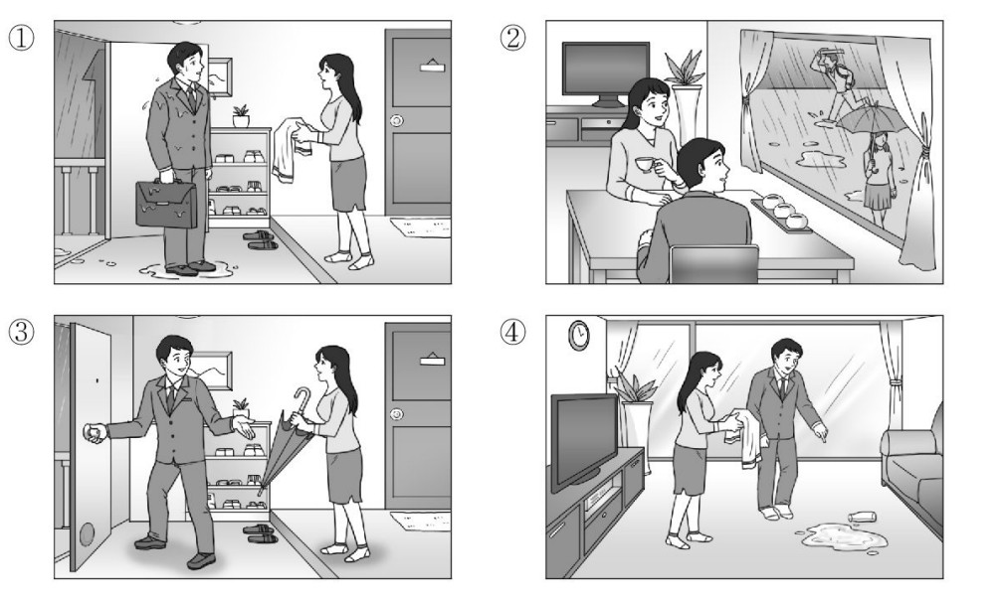
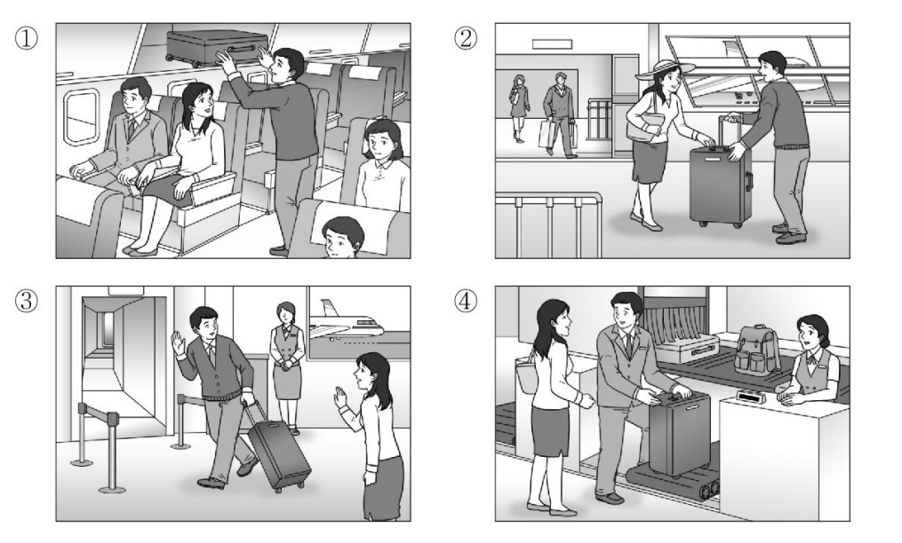
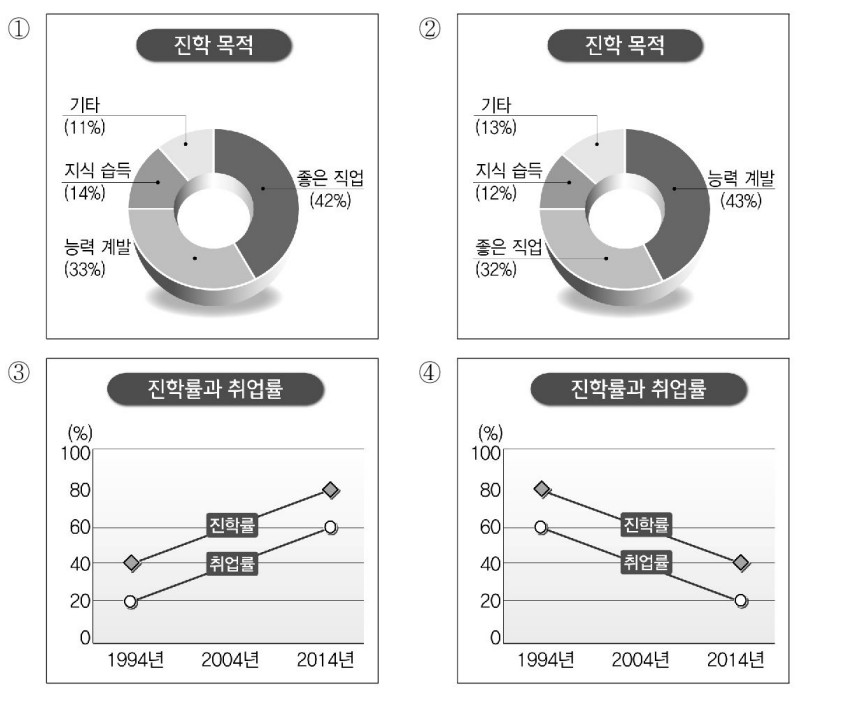

👨 남자: 네, 집에 오는데 갑자기 비가 오네요.
👩 여자: 우선 이걸로 좀 닦으세요.
👨 Nam: Vâng, tôi đang trên đường về nhà thì tự nhiên trời đổ mưa.
👩 Nữ: Trước tiên anh hãy cầm lấy cái này lau người đi đã.
🎯 Phân tích đáp án
Tại sao chọn ①? Trong đoạn hội thoại, người nam bước vào nhà với bộ dạng ướt sũng do đi ngoài trời mưa (옷이 다 젖었어요 / 갑자기 비가 오네요). Người nữ thấy vậy liền lấy khăn đưa cho người nam lau người (우선 이걸로 좀 닦으세요). Bức tranh số 1 mô tả chính xác cảnh người nữ đứng ở cửa ra vào, cầm chiếc khăn đưa cho người nam đang xách cặp đi làm về bị ướt sũng.
- Hình 2 sai vì hai người đang ngồi uống trà trong nhà, nhìn ra ngoài cửa sổ thấy người khác che ô đi dưới mưa.
- Hình 3 sai vì người nữ đang đưa ô cho người nam che đi ra ngoài.
- Hình 4 sai vì hai người đang đứng trong phòng khách, dưới sàn nhà bị đổ nước vương vãi, không liên quan đến việc "đi ngoài trời mưa bị ướt".

👩 여자: 네, 그런데 비행기를 오래 타서 그런지 좀 피곤하네요. 많이 기다렸어요?
👨 남자: 아니에요. 가방 이리 주세요. 제가 들게요.
👩 Nữ: Vâng, vui lắm ạ. Nhưng mà không biết có phải do ngồi máy bay lâu quá không mà tôi thấy hơi mệt. Anh đợi tôi có lâu không?
👨 Nam: Không lâu đâu. Cô đưa vali đây cho tôi, để tôi xách giúp cho.
🎯 Phân tích đáp án
Tại sao chọn ②? Đoạn hội thoại cho thấy người nam đang đón người nữ tại sân bay sau chuyến du lịch dài (비행기를 오래 타서). Người nam ngỏ ý xách giúp vali cho người nữ (가방 이리 주세요. 제가 들게요). Bức tranh số 2 mô tả chính xác cảnh một người nam đang đưa tay nhận lấy chiếc vali từ tay người nữ vừa bước ra từ cổng hành lý ở sân bay.
- Hình 1 sai vì mô tả cảnh người nam đang đưa hành lý lên khoang chứa phía trên ghế ngồi bên trong máy bay.
- Hình 3 sai vì mô tả cảnh người nam đang kéo vali chào tạm biệt nữ tiếp viên tại cổng lên máy bay.
- Hình 4 sai vì mô tả cảnh giao hành lý cho nhân viên ở quầy ký gửi tại sân bay.

🎯 Phân tích đáp án
Tại sao chọn ①? Bản tin trình bày xếp hạng tỷ lệ các lý do học đại học (진학 목적). Thông tin quan trọng để xếp hạng là: "'좋은 직업을 갖기 위해'라는 응답이 가장 많았으며..." ('Để có nghề nghiệp tốt' chiếm tỷ lệ cao nhất). Tiếp theo là "'능력 계발'과 '지식 습득'이 뒤를 이었습니다" ('Phát triển năng lực' và 'Tiếp thu kiến thức' xếp sau). Biểu đồ Hình 1 thể hiện chính xác tỷ lệ này: 좋은 직업 (42% - Cao nhất) > 능력 계발 (33% - Hạng 2) > 지식 습득 (14% - Hạng 3).
- Hình 2 sai vì biểu đồ thể hiện '능력 계발' (Phát triển năng lực 43%) là phần chiếm tỷ lệ lớn nhất.
- Hình 3 & Hình 4 sai vì đây là các biểu đồ đường nói về sự thay đổi của "Tỷ lệ học lên đại học và Tỷ lệ việc làm" (진학률과 취업률) qua các năm, không phải nội dung chính miêu tả tỷ lệ của các "Mục đích học lên" (진학 목적).
👨 남자: 내일 야유회 가야 하는데 걱정이네요.
👩 여자: _____________________________
👨 Nam: Ngày mai tôi phải đi dã ngoại ngoài trời, nghe cô nói làm tôi lo quá đi.
👩 Nữ: ( Vậy thì ngày mai anh hãy mặc áo thật ấm vào rồi hẵng đi nhé. )
- ① Ra là anh đã đi dã ngoại về rồi nhỉ.
- ② Tôi đã đi đến một nơi gần đây thôi.
- ③ Ngày mai anh hãy mặc áo thật ấm vào rồi đi nhé.
- ④ Những lúc trời lạnh tôi thường hay nghỉ ngơi ở nhà.
🎯 Phân tích đáp án
Tại sao chọn ③? Người nữ nhắc nhở ngày mai trời sẽ rất lạnh (기온이 더 내려간다). Người nam lo lắng vì ngày mai mình có lịch phải đi dã ngoại ở ngoài (야유회 가야 하는데 걱정이네요). Phản ứng tự nhiên và thiết thực nhất của người nữ lúc này là dặn dò đối phương giữ ấm: "옷을 따뜻하게 입고 가세요" (Ngày mai anh nhớ mặc áo thật ấm vào rồi hẵng đi nhé).
- ① Sai vì người nam NGÀY MAI MỚI ĐI (내일 야유회 가야), chứ chưa phải đi dã ngoại về (다녀왔군요).
- ② Sai vì người nữ không cần báo cáo mình đi gần hay xa, người sắp phải ra ngoài là người nam.
- ④ Sai vì người nam đang bắt buộc phải ra ngoài (đi dã ngoại), chia sẻ thói quen ở nhà trùm chăn (집에서 쉬곤 해요) của cô gái là không phù hợp và không giải quyết được lo lắng của người nam.
👨 남자: 왜? 지금 사는 집 아주 마음에 든다고 했잖아.
👩 여자: _____________________________
👨 Nam: Ủa tại sao? Cậu từng nói là cực kỳ ưng ý với căn nhà đang ở hiện tại cơ mà.
👩 Nữ: ( Lúc đầu tưởng ngon nhưng sống thử rồi mới thấy tiếng ồn bên đó nghiêm trọng quá. )
- ① Tớ sống thử rồi mới thấy tiếng ồn bên đó nghiêm trọng quá.
- ② Sống hai người thì vẫn tốt hơn là sống một mình.
- ③ Căn nhà hiện tại rất gần trường nên đi lại tiện lợi và thích lắm.
- ④ Vì tớ nghĩ là ra văn phòng bất động sản để tìm hiểu thì sẽ tốt hơn.
🎯 Phân tích đáp án
Tại sao chọn ①? Người nam đang vô cùng thắc mắc vì sao người nữ lại muốn chuyển nhà trong khi trước đó cô từng khen nơi đó rất ưng ý (지금 사는 집 아주 마음에 든다고 했잖아). Người nữ buộc phải đưa ra một khuyết điểm mới phát hiện để lý giải cho quyết định chuyển nhà của mình. Câu trả lời "Sống thử rồi mới thấy tiếng ồn ở đó quá kinh khủng" (살아 보니 소음이 너무 심하더라고) là một lý do hoàn toàn phù hợp và logic.
- ② Sai vì đang hỏi lý do muốn dọn đi chỗ khác (이사할 집), không liên quan đến việc "thích sống hai người hơn một mình".
- ③ Sai vì nếu nhà hiện tại đang "rất gần trường và tiện lợi" (학교와 가까워서 편하고 좋아) thì cô ấy chẳng có lý do gì để muốn chuyển đi cả.
- ④ Sai vì người nam đang hỏi lý do TẠI SAO CHUYỂN NHÀ (왜?), chứ không hỏi cách thức tìm nhà (부동산에 가서).
👨 남자: 텐트같이 캠핑에 필요한 물건들이 다 갖춰진 데가 있다던데?
👩 여자: _____________________________
👨 Nam: Ủa, nghe bảo bây giờ có những khu người ta trang bị sẵn đầy đủ mọi vật dụng cần thiết cho việc cắm trại như lều bạt luôn rồi mà?
👩 Nữ: ( Thế à? Giá mà tớ biết được điều đó sớm hơn thì tốt biết mấy. )
- ① Thật vậy sao? Vậy thì chỉ cần mua cái lều thôi là được rồi nhỉ.
- ② Mặc dù anh bảo vậy nhưng tớ vẫn phải đi tìm hiểu thật cặn kẽ mới được.
- ③ Thế à? Giá mà tớ biết được điều đó sớm hơn thì tốt biết mấy.
- ④ Dù có lều đi nữa thì việc tự dựng lều lên chắc cũng vất vả lắm.
🎯 Phân tích đáp án
Tại sao chọn ③? Người nữ đã bỏ lỡ mất chuyến đi cắm trại (못 갔어) chỉ vì phiền hà việc mua đồ. Khi nghe người nam cho biết thông tin về khu cắm trại "có trang bị sẵn mọi thứ" (다 갖춰진 데가), cô ấy nhận ra rằng nếu biết thông tin này thì cô ấy đã đi được rồi. Phản ứng tiếc nuối "미리 알았으면 좋았을걸" (Giá mà tớ biết thông tin đó từ trước thì tốt quá) là phản xạ hợp lý nhất trong tình huống bị lỡ cơ hội.
- ① Sai vì người nam nói những khu đó ĐÃ TRANG BỊ SẴN LỀU (텐트같이... 다 갖춰진), cô gái không cần thiết phải "mua lều" (텐트만 사면 되겠네).
- ② Sai vì cô gái ĐÃ HỦY ĐI CHƠI (못 갔어), nên giờ có nói "phải đi tìm hiểu cặn kẽ" (자세히 알아봐야겠다) thì cũng đã muộn màng.
- ④ Sai vì những nơi này là dịch vụ cung cấp sẵn, khách không phải chật vật "tự dựng lều" (텐트는 치기 힘들겠다).
👨 남자: 전 오히려 일에 집중이 안 될 것 같은데요.
👩 여자: _____________________________
👨 Nam: Tôi thì lại nghĩ ngược lại, không gian như thế khéo lại khiến nhân viên bị mất tập trung vào công việc ấy chứ.
👩 Nữ: ( Tôi thì lại cho rằng tinh thần thoải mái thì mới có thể làm việc hiệu quả được. )
- ① Không khí ở đây tốt y như ở quán cà phê vậy.
- ② Nếu bên cạnh văn phòng mà có quán cà phê thì tốt thật đấy.
- ③ Nếu anh không tập trung được thì hãy thử ra quán cà phê làm việc xem sao.
- ④ Cá nhân tôi thì lại nghĩ rằng tinh thần thoải mái thì công việc mới trôi chảy được.
🎯 Phân tích đáp án
Tại sao chọn ④? Hai người đang có quan điểm đối lập về môi trường làm việc kiểu cà phê: Nữ ủng hộ (thoải mái -> có hứng làm việc), Nam phản đối (sẽ gây mất tập trung). Bị đối phương phản bác, người nữ sẽ tiếp tục bảo vệ lập luận của mình. Câu đáp "전 편안하면 일이 더 잘 될 것 같아요" (Tôi thì lại tin rằng sự thoải mái sẽ giúp công việc tốt hơn) thể hiện rõ quan điểm bảo lưu nhẹ nhàng của cô ấy.
- ① Sai vì người nữ đang nói về "Trend của các công ty khác" (바꾸는 회사들이 많대요), không phải đang khen ngợi văn phòng công ty mình.
- ② Sai vì chủ đề tranh luận là THIẾT KẾ BÊN TRONG VĂN PHÒNG (사무실 분위기), không phải là việc "có quán cà phê nằm bên cạnh văn phòng" (사무실 옆에 카페).
- ③ Sai vì người nam lo sợ LÀM Ở MÔI TRƯỜNG GIỐNG QUÁN CAFE SẼ BỊ MẤT TẬP TRUNG, nên khuyên "nếu mất tập trung hãy ra quán cafe thật" là điều vô lý.
👩 여자: 그래요? 좋은 기환데 다시 한번 생각해 보시죠.
👨 남자: _____________________________
👩 Nữ: Trời, vậy sao? Đây thực sự là một cơ hội tốt đấy, cậu hãy thử suy nghĩ lại thêm một lần nữa xem sao.
👨 Nam: ( Bản thân tôi cũng thực sự rất muốn đi nhưng e là tình hình hiện tại rất khó khăn cho tôi ạ. )
- ① Vâng, tôi sẽ tu nghiệp về rồi đến thưa chuyện với sếp ạ.
- ② Chẳng phải ở lần trước tôi đã thưa chuyện trước rồi hay sao.
- ③ Dạ nếu có lý do cá nhân bất ngờ phát sinh thì tôi sẽ báo cáo lại sau ạ.
- ④ Bản thân tôi cũng thực sự rất muốn đi nhưng e là hoàn cảnh gia đình không cho phép ạ.
🎯 Phân tích đáp án
Tại sao chọn ④? Người nhân viên (nam) chủ động báo cáo với sếp từ chối cơ hội đi tu nghiệp vì lý do cá nhân (못 갈 것 같습니다). Người sếp khuyên nhủ "Đây là cơ hội tốt, cậu hãy suy nghĩ lại" (좋은 기환데 다시 한번 생각해 보시죠). Dù sếp có lòng, nhưng nhân viên đã vướng bận nên buộc phải giữ quyết định từ chối. Câu đáp "저도 정말 가고 싶지만 힘들 것 같습니다" (Tôi cũng rất muốn được đi nhưng e là hoàn cảnh hiện tại không cho phép ạ) là một cách từ chối khéo léo và lịch sự nhất.
- ① Sai vì người nam ĐÃ QUYẾT ĐỊNH KHÔNG ĐI (못 갈 것 같습니다), nên không có chuyện "tu nghiệp về sẽ gặp sếp".
- ② Sai vì đây là LẦN ĐẦU TIÊN TỪ CHỐI, nói "lần trước tôi báo rồi mà" là thái độ hỗn xược với sếp.
- ③ Sai vì "sự cố cá nhân" ĐÃ VÀ ĐANG VƯỚNG BẬN RỒI (사정 때문에 못 간다), không phải là chuyện "nếu tương lai nhỡ có xảy ra thì em báo sau".
👨 남자: 좋아요. 그런데 그 식당은 예약해야 하잖아요.
👩 여자: 네, 당신한테 물어보고 하려고요.
👨 남자: 그래요? 그럼 난 퇴근하고 바로 그리로 갈 테니까 일곱 시에 봐요.
👨 Nam: Tuyệt vời. Cơ mà nhà hàng đó hình như phải đặt bàn trước thì mới có chỗ đúng không em?
👩 Nữ: Vâng, em muốn hỏi ý kiến anh trước xem sao rồi mới gọi điện chốt đặt bàn đây.
👨 Nam: Vậy à? Thế thì tan làm xong anh sẽ phi thẳng từ công ty đến nhà hàng luôn nhé, hẹn em và các con ở đó lúc 7 giờ nha.
- ① Tiến hành đặt bàn tại nhà hàng mà cả gia đình sẽ đi ăn ngoài.
- ② Tan làm xong và đi đến địa điểm hẹn trước.
- ③ Đi đến trước công ty để gặp chồng.
- ④ Dắt theo bọn trẻ đi đến trước cổng công ty.
🎯 Phân tích đáp án
Tại sao chọn ①? Đề bài yêu cầu tìm "Hành động TIẾP THEO của người Nữ". Người chồng nhắc "Nhà hàng đó phải đặt bàn mới được" (그 식당은 예약해야 하잖아요). Người vợ trả lời "당신한테 물어보고 하려고요" (Em định hỏi ý kiến anh rồi mới làm (đặt bàn)). Khi người chồng đã chốt đi ăn lúc 7 giờ, hành động ngay tiếp theo người vợ buộc phải làm chính là Bốc máy gọi điện đặt bàn nhà hàng (식당을 예약한다). Đáp án ① hoàn toàn chính xác.
- ② Sai vì hành động "Tan làm rồi phi thẳng tới điểm hẹn" là của NGƯỜI CHỒNG (난 퇴근하고 바로 그리로 갈 테니까).
- ③, ④ Sai vì người chồng chốt sẽ TỰ ĐI ĐẾN NHÀ HÀNG (그리로 갈 테니까 = Hướng đến chỗ đó), người vợ không cần cất công dắt con "đi đến cổng công ty" (회사 앞으로) đón chồng làm gì.
👨 남자: 네, 환절기라서요. 한 시간은 기다리셔야 될 것 같은데요.
👩 여자: 지금 접수해 놓고 나갔다 와도 되죠?
👨 남자: 네, 볼일 보시고 늦지 않게 오세요.
👨 Nam: Dạ vâng, do đang thời điểm giao mùa nên lượng bệnh nhân đông lắm ạ. Chắc cô sẽ phải đợi khoảng 1 tiếng đồng hồ đấy.
👩 Nữ: Vậy bây giờ tôi làm thủ tục đăng ký lấy số thứ tự trước rồi chạy ra ngoài một lát quay lại có được không?
👨 Nam: Dạ vâng được ạ, cô cứ ra ngoài giải quyết việc riêng nhưng nhớ chú ý canh thời gian quay lại đừng để bị lố số thứ tự là được.
- ① Chạy đi ra ngoài để giải quyết việc cá nhân.
- ② Tiến hành làm thủ tục tiếp nhận đăng ký khám bệnh.
- ③ Cam chịu ngồi vạ vật ở bệnh viện để chờ suốt 1 tiếng.
- ④ Đẩy cửa đi vào phòng trong để được khám bệnh.
🎯 Phân tích đáp án
Tại sao chọn ②? Đề bài yêu cầu tìm "Hành động TIẾP THEO của người Nữ". Khi nghe tin phải chờ tận 1 tiếng, cô ấy xin phép: "지금 접수해 놓고 나갔다 와도 되죠?" (Bây giờ tôi đăng ký lấy số trước rồi ra ngoài được không?). Người nam đồng ý. Theo trình tự thời gian, để có thể chạy ra ngoài, hành động ĐẦU TIÊN cô ấy phải làm ngay tại quầy là Làm thủ tục đăng ký khám (진료 접수를 한다). Do đó đáp án ② là bước tiếp theo ngay tức khắc.
- ① Sai vì hành động "Đi ra ngoài giải quyết việc riêng" (볼일을 보러 간다) là hành động diễn ra SAU KHI cô ấy đã chốt xong thủ tục lấy số đăng ký. Đề hỏi việc xảy ra ngay tiếp theo.
- ③ Sai vì cô ấy đã chủ động xin ra ngoài để KHÔNG PHẢI NGỒI CHỜ Ở VIỆN (기다린다).
- ④ Sai vì bệnh viện đang kẹt kín người, cô ấy phải đợi 1 tiếng nữa mới tới lượt nên không thể ngang ngược "Đi vào khám ngay" (진찰을 받으러 들어간다) được.
👨 남자: 이쪽으로 와서 보세요. 책자에도 많이 있으니까 좀 보시고요.
👩 여자: 음……………. 가게에는 딱히 마음에 드는 게 없어서 책자를 좀 봐야겠네요.
👨 남자: 그럼 앉아서 천천히 보세요. 마음에 드는 거 있으시면 댁으로 가져가서 달아 드릴게요.
👨 Nam: Dạ vâng, mời chị đi sang phía bên này để xem trực tiếp các mẫu rèm ạ. Ngoài ra trong cuốn catalogue này cũng có rất nhiều mẫu đa dạng, chị cứ xem thử nhé.
👩 Nữ: Ừm... Xem mấy cái rèm treo ở cửa tiệm nãy giờ tôi chưa thấy có cái nào đặc biệt ưng ý cả, chắc là tôi phải ngồi lật cuốn catalogue này ra xem thêm mới được.
👨 Nam: Dạ vâng, vậy mời chị ngồi xuống và cứ thong thả lật xem nhé. Nếu chị chốt ưng ý mẫu nào thì bên em sẽ trực tiếp mang rèm đến tận nhà để thi công lắp đặt cho chị ạ.
- ① Sẽ mở cuốn catalogue ra để lựa chọn rèm cửa.
- ② Sẽ tự tay lắp đặt chiếc rèm ở phòng khách trong nhà mình.
- ③ Sẽ đi đến cửa hàng đồ nội thất để tìm mua rèm cửa.
- ④ Sẽ mua rèm cửa rồi tự mình xách mang về nhà.
🎯 Phân tích đáp án
Tại sao chọn ①? Đề bài yêu cầu tìm "Hành động TIẾP THEO của người Nữ". Người nữ đến tiệm mua rèm nhưng nhìn hàng trưng bày không ưng ý, nên cô ấy chốt lại: "딱히 마음에 드는 게 없어서 책자를 좀 봐야겠네요" (Chưa có cái nào ưng ý nên chắc tôi phải xem catalogue thôi). Người nam sau đó mời cô ngồi xuống xem từ từ. Hành động ngay tức khắc tiếp theo mà cô gái chuẩn bị làm chính là lật cuốn sách mẫu ra để lựa chọn rèm. Đáp án ① diễn đạt lại đúng thông tin này: 책자에서 커튼을 고른다 (Chọn rèm trong catalogue).
- ② Sai vì việc "mang rèm tới tận nhà để lắp ráp treo lên" (댁으로 가져가서 달아 드릴게요) là hành động của NHÂN VIÊN CỬA HÀNG (Người nam) sau khi khách chốt đơn xong.
- ③ Sai vì hiện tại cô gái ĐANG ĐỨNG TRONG CỬA HÀNG RỒI (가게에는 딱히 마음에 드는 게 없어서), không cần đi đâu nữa.
- ④ Sai vì cô gái chưa chọn được mẫu nên CHƯA MUA GÌ (사서), và nhân viên cũng cam kết sẽ tự mang đến tận nhà lắp cho khách chứ khách không cần tự xách về (가져간다).
👨 남자: 네, 일정은 모두 짰고 장소도 곧 확정될 것 같아요. 그런데 특강해 주실 분을 못 구해서 걱정입니다.
👩 여자: 그건 내가 알아볼게요. 지난번 그 분을 다시 한번 모셔도 될 것 같아요.
👨 남자: 알겠습니다. 그럼 전 장소가 확정되는 대로 보고 드리겠습니다.
👨 Nam (Trưởng phòng): Dạ vâng, lịch trình thì em đã lên xong hết rồi, và địa điểm tổ chức có lẽ cũng sắp chốt được rồi ạ. Thế nhưng em đang hơi lo lắng vì vẫn chưa chèo kéo mời được diễn giả nào đến để thuyết giảng đặc biệt cả.
👩 Nữ (Sếp): Vụ diễn giả đó để tôi lo liệu cho. Tôi nghĩ chúng ta hoàn toàn có thể mời lại vị diễn giả đã từng giảng bài vào đợt đào tạo lần trước đấy.
👨 Nam (Trưởng phòng): Dạ vâng em hiểu rồi thưa sếp. Vậy ngay khi bên em chốt hạ xong địa điểm tổ chức, em sẽ lập tức làm báo cáo đệ trình lên cho sếp ạ.
- ① Tiến hành lên kế hoạch và lập lịch trình đào tạo nhân viên.
- ② Chạy xe đến tận nơi để đón vị giảng viên thỉnh giảng.
- ③ Bốc máy gọi điện liên lạc cho vị giảng viên đã từng giảng bài ở lần trước.
- ④ Đi tìm hiểu thông tin về địa điểm sẽ diễn ra buổi đào tạo.
🎯 Phân tích đáp án
Tại sao chọn ③? Đề bài yêu cầu tìm "Hành động TIẾP THEO của người Nữ". Khi nghe cấp dưới than thở không tìm được giảng viên, sếp nữ đã chủ động ôm việc: "그건 내가 알아볼게요. 지난번 그 분을 다시 한번 모셔도 될 것 같아요" (Chuyện đó để tôi lo. Có lẽ mời lại vị diễn giả lần trước là được). Để có thể "mời lại vị diễn giả cũ", hành động ngay tức khắc mà bà sếp phải làm khi quay về bàn làm việc chính là "Liên lạc với giảng viên đã từng thỉnh giảng" (특강했던 강사에게 연락한다). Đáp án ③ miêu tả đúng nghiệp vụ này.
- ① Sai vì công việc "lên lịch trình" ĐÃ ĐƯỢC NGƯỜI NAM LÀM XONG XUÔI (일정은 모두 짰고).
- ② Sai vì sếp nữ chỉ mới lên kế hoạch "mời/liên lạc thỏa thuận" (모셔도 될 것 같다), chưa tới ngày đào tạo nên không phải là xách xe đi "đón" (모시러 간다) người ta đến hội trường ngay lúc này.
- ④ Sai vì công việc "chốt địa điểm" đang được NGƯỜI NAM (Trưởng phòng Kim) phụ trách giải quyết (장소가 확정되는 대로 보고 드리겠습니다).
👨 남자: 네. 주말마다 출발하는 프로그램이 있더라고요. 기회가 되면 다시 가고 싶어요.
👩 여자: 그래요? 저도 가고 싶은데 이번 달까지는 시간이 안 나네요.
👨 남자: 그럼 휴가 때라도 한번 가 보세요. 미리 예약하면 더 싸대요.
👨 Nam: Vâng vui lắm cô ạ. Họ có những chương trình tổ chức khởi hành vào mỗi dịp cuối tuần đấy. Nếu có cơ hội, tôi nhất định sẽ xách balo đi trải nghiệm ở đó thêm một lần nữa mới được.
👩 Nữ: Tuyệt vời vậy sao? Nghe anh kể mà tôi cũng muốn đi quá, ngặt nỗi từ giờ đến hết tháng này tôi bận bù đầu chẳng rảnh rỗi được ngày nào cả.
👨 Nam: Vậy thì cô hãy thử đi vào kỳ nghỉ phép tới xem sao. Nghe đồn là nếu mình đăng ký đặt chỗ trước từ sớm thì giá vé sẽ được giảm rẻ hơn đấy.
- ① Người đàn ông đang tỏ ra vô cùng hài lòng và tâm đắc với chương trình trải nghiệm này.
- ② Nếu bạn là khách quen đi chương trình này lần thứ hai thì sẽ được hưởng chính sách giảm giá.
- ③ Bạn bắt buộc phải đăng ký đặt chỗ trước thì mới được phép tham gia vào chương trình này.
- ④ Người phụ nữ sẽ sắp xếp thời gian để tham gia vào chương trình này ngay trong tháng này.
🎯 Phân tích đáp án
Tại sao chọn ①? Sau khi đi chương trình trải nghiệm sinh thái về, người nam đã bộc bạch cảm xúc: "기회가 되면 다시 가고 싶어요" (Nếu có cơ hội tôi muốn đi thêm lần nữa). Tâm lý muốn quay lại trải nghiệm thêm một lần nữa chứng tỏ người nam Đang rất hài lòng với chương trình này (프로그램에 만족해 한다). Đáp án ① là sự suy luận logic và chính xác tuyệt đối về thái độ của người nam.
- ② CẨN THẬN BẪY: Người nam bảo là ĐẶT TRƯỚC SỚM (미리 예약하면) thì mới được giảm giá, chứ chương trình này không hề có chính sách khuyến mãi "đi lần 2 thì được giảm giá" (다시 가면 할인해 준다). Đừng để bị lừa vì nghe bắt được chữ "다시" và "싸대요" ráp lại với nhau!
- ③ Sai vì đặt trước chỉ là mẹo để ĐƯỢC GIẢM GIÁ (더 싸대요), chứ không có quy định ép buộc "phải đặt trước mới được tham gia" (예약해야 참여할 수 있다).
- ④ Sai vì người nữ than vãn "이번 달까지는 시간이 안 나네요" (Từ giờ đến hết tháng này tôi không có thời gian rảnh rỗi). Do đó cô ấy không thể tham gia trong tháng này được.
- ① Tuyệt đối cấm không được sử dụng các thiết bị sưởi ấm vào buổi đêm.
- ② Sau 9 giờ tối, mọi người bắt buộc phải tắt toàn bộ các thiết bị điện tử.
- ③ Các văn phòng bắt buộc phải duy trì nhiệt độ sưởi ấm ở một mức cố định nhất định.
- ④ Trong suốt khung giờ nghỉ trưa, hệ thống thang máy sẽ bị ngắt điện không hoạt động.
🎯 Phân tích đáp án
Tại sao chọn ③? Loa phát thanh thông báo quy định về sử dụng máy sưởi: "사무실의 난방 온도는 18도를 유지해 주시고..." (Vui lòng duy trì nhiệt độ sưởi ở văn phòng ở mức 18 độ). Việc bắt buộc phải giữ nguyên mức nhiệt độ 18 độ này chính là "Phải duy trì văn phòng ở một mức nhiệt độ cố định" (사무실은 일정 온도를 유지해야 한다). Đáp án ③ diễn đạt hoàn toàn chính xác quy định này của công ty.
- ① Sai vì loa thông báo KHÔNG HỀ CÓ QUY ĐỊNH NÀO cấm dùng lò sưởi vào buổi đêm cả.
- ② Sai vì mốc thời gian "Sau 9 giờ tối" (9시 이후) là giờ CÚP CẦU DAO THANG MÁY (엘리베이터가 운행되지 않으니), không liên quan đến việc "tắt thiết bị điện". Việc tắt đồ điện được yêu cầu thực hiện vào Giờ nghỉ trưa (점심시간).
- ④ Sai vì mốc thời gian "Giờ nghỉ trưa" (점심시간) là lúc PHẢI TẮT ĐỒ ĐIỆN KHÔNG DÙNG TỚI (전기 제품은 꺼 주시기). Còn việc thang máy ngừng chạy là chuyện của Sau 9 giờ tối (밤 9시 이후). Đừng để bị râu ông nọ cắm cằm bà kia!
- ① Chế độ tuần tra chuyên trách này đã được chính thức đưa vào thực thi kể từ năm ngoái.
- ② Kể từ sau khi áp dụng chế độ này, tỷ lệ tội phạm trong khu vực đã sụt giảm đáng kể.
- ③ Hiện tại, chế độ tuần tra chuyên trách này đang được tiến hành áp dụng rộng rãi trên quy mô toàn quốc.
- ④ Người dân địa phương sẽ tham gia cùng với các viên cảnh sát để đi tuần tra các khu vực được phân công.
🎯 Phân tích đáp án
Tại sao chọn ②? Bản tin báo cáo về hiệu quả thần kỳ của chính sách mới: "도입한 지 6개월 만에 범죄 발생률이 절반 가까이 줄어" (Chỉ sau 6 tháng áp dụng, tỷ lệ phát sinh tội phạm đã giảm xuống gần một nửa). Tỷ lệ tội phạm giảm đi chính là "범죄율이 감소하였다". Đáp án ② đúc kết hoàn toàn chính xác thành quả của chính sách này.
- ① Sai vì chế độ này mới chỉ được áp dụng từ THÁNG 4 VỪA QUA (지난 4월부터), không phải là "từ năm ngoái" (작년부터). Cả quá trình mới được có 6 tháng (6개월 만에).
- ③ Sai vì hiện tại mô hình này chỉ mới áp dụng thí điểm ở THÀNH PHỐ INJU (인주시에서는), và người ta đang "xem xét mở rộng ra các khu vực khác" (다른 지역으로 확대하는 방안 검토). Việc bảo nó "đang thi hành trên toàn quốc" (전국에서 시행되고 있다) là cầm đèn chạy trước ô tô.
- ④ Sai vì người dân chỉ được CẤP SỐ ĐIỆN THOẠI ĐỂ GỌI KHI CÓ CHUYỆN (주민들이 연락할 수 있도록), chứ cảnh sát không hề bắt người dân vác gậy "đi tuần tra cùng" (경찰관과 함께 순찰한다) nguy hiểm tính mạng.
👨 남자: 그 비결은 바로 '도시락 카페'입니다. 시장에서 파는 먹을거리 중에 내 입맛에 맞는 것을 도시락에 담아 이 카페에서 먹습니다. 마치 소풍을 온 것 같지요. 이게 입소문을 통해 알려지면서 저희 시장은 유명해지게 되었습니다. 이제는 우리나라 사람뿐만 아니라 외국 분들도 많이 찾는 관광지가 되었습니다.
👨 Nam (Chủ tịch): Bí quyết làm nên thương hiệu của chúng tôi nằm ở mô hình 'Quán cà phê Hộp cơm' độc nhất vô nhị. Khách hàng khi đến đây có thể tự do lang thang quanh chợ, lựa chọn mua những món đồ ăn vặt hợp với khẩu vị của mình rồi xếp chúng vào chiếc hộp cơm trống, sau đó mang vào quán cà phê này để nhâm nhi thưởng thức. Trải nghiệm này mang lại một cảm giác thú vị y hệt như đang đi dã ngoại picnic vậy. Nhờ tiếng lành đồn xa thông qua những lời truyền miệng của khách hàng, khu chợ của chúng tôi đã trở nên vô cùng nổi tiếng. Giờ đây, nơi này đã chính thức vươn mình trở thành một tụ điểm du lịch nhộn nhịp, thu hút không chỉ người dân trong nước mà còn cả những du khách nước ngoài đến tham quan.
- ① Quán cà phê trong khu chợ này đang bày bán rất nhiều loại hộp cơm làm sẵn đa dạng khác nhau.
- ② Ban quản lý đã mạnh tay chi tiền chạy quảng cáo nhằm mục đích quảng bá khu chợ này thành một địa điểm du lịch.
- ③ Nhờ vào việc khu chợ vốn dĩ đã có tiếng thu hút đông khách nên người ta mới mở thêm quán cà phê hộp cơm ở đây.
- ④ Tại khu chợ này, du khách sẽ được trải nghiệm một niềm vui thú vị khi có thể tự do đi dạo quanh để lựa chọn đồ ăn nhét vào hộp cơm của mình.
🎯 Phân tích đáp án
Tại sao chọn ④? Vị Chủ tịch miêu tả trải nghiệm ở khu chợ: "시장에서 파는 먹을거리 중에 내 입맛에 맞는 것을 도시락에 담아 이 카페에서 먹습니다" (Khách hàng sẽ TỰ MÌNH LỰA CHỌN những đồ ăn hợp khẩu vị đang bán ở quanh chợ rồi nhét vào hộp cơm và mang vào quán cafe ăn). Việc tự tay đi nhặt nhạnh từng món ăn quanh chợ mang lại cảm giác thích thú như đi picnic (마치 소풍을 온 것 같지요). Đặc điểm này chính là "Có niềm vui được tự tay lựa đồ ăn (음식을 골라먹는 재미가 있다)". Đáp án ④ tóm tắt vô cùng xuất sắc điểm hấp dẫn cốt lõi của khu chợ này.
- ① CẨN THẬN BẪY: Quán cà phê KHÔNG BÁN HỘP CƠM CÓ SẴN ĐỒ ĂN (도시락을 판다). Ở đây khách chỉ được phát cái vỏ hộp cơm trống, khách phải TỰ CHẠY RA CÁC SẠP Ở CHỢ MUA ĐỒ ĂN (시장에서 파는... 것을 담아) rồi mới mang vào quán cafe ngồi ăn.
- ② Sai vì khu chợ nổi tiếng hoàn toàn là nhờ vào TIẾNG LÀNH ĐỒN XA (입소문을 통해 알려지면서), chứ Ban quản lý không hề tung tiền ra chạy "PR quảng cáo" (홍보했다) nào cả.
- ③ CẨN THẬN BẪY: Trật tự nhân quả bị đảo lộn. Phải là "Nhờ MỞ QUÁN CAFE HỘP CƠM -> Khu chợ mới NỔI TIẾNG" (비결은 도시락 카페입니다... 시장은 유명해지게 되었습니다). Đáp án ③ lại bảo "Nhờ chợ nổi tiếng sẵn rồi -> Nên mới mở quán cafe" là lật ngược hoàn toàn lịch sử.
👩 여자: 이 정도면 충분한 것 같아서요. 지금 아는 것만 잘 활용해도 컴퓨터 못해서 힘들 일은 없을 것 같고요. 그런데 굳이 학원을 더 다닐 필요가 있나 싶더라고요.
👨 남자: 그래도 뭐든 좀 깊이 배우는 게 좋지 않을까요? 특히 요즘 같은 경쟁 사회에서는요. 전문성이 강해질수록 경쟁력이 되잖아요.
👩 Nữ: Tại tôi cảm thấy trình độ hiện tại của mình như vậy là đã quá đủ xài rồi anh ạ. Giờ chỉ cần biết tận dụng tốt mớ kiến thức nền tảng đã học là tôi nghĩ mình sẽ chẳng bao giờ phải chật vật hay khổ sở vì mấy cái lỗi máy tính nữa đâu. Thế nên tôi thấy thực sự không nhất thiết phải cắm đầu đi học thêm ở trung tâm để làm gì cho tốn thời gian nữa.
👨 Nam: Nhưng mà cô ơi, dù là bất cứ môn gì đi chăng nữa thì chẳng phải việc đào sâu nghiên cứu tới nơi tới chốn vẫn sẽ tốt hơn sao? Nhất là khi chúng ta đang sống trong một xã hội cạnh tranh khốc liệt như hiện nay. Càng trang bị cho mình nền tảng chuyên môn sâu rộng bao nhiêu thì nó lại càng trở thành một thứ vũ khí cạnh tranh lợi hại cho chính mình bấy nhiêu mà.
- ① Không nhất thiết phải ép buộc bản thân phải đi học máy tính ở các trung tâm.
- ② Nếu chịu khó trau dồi và học hỏi máy tính sâu hơn, năng lực cạnh tranh của bản thân sẽ được gia tăng đáng kể.
- ③ Đối với môn máy tính, chúng ta chỉ cần học đến cái mức độ vừa đủ xài cho nhu cầu của bản thân là được rồi.
- ④ Đã lỡ đăng ký học ở trung tâm tin học thì bắt buộc phải kiên trì theo học cho đến khi nào lấy được tấm bằng chứng chỉ thì thôi.
🎯 Phân tích đáp án
Tại sao chọn ②? Đề bài yêu cầu tìm "Suy nghĩ trọng tâm của người Nam". Người nữ cho rằng học tàng tàng đủ xài là được rồi, không cần đi học thêm nữa. Trái lại, người Nam lập tức phản bác và khuyên cô gái nên học lên cao đào sâu thêm nữa. Anh ta đưa ra lý do chốt hạ: "전문성이 강해질수록 경쟁력이 되잖아요" (Cô càng có chuyên môn cao thì đó sẽ trở thành năng lực cạnh tranh cho chính cô). Quan điểm "Khuyên nên học thêm để tăng năng lực cạnh tranh" này chính là thông điệp của đáp án ②: 컴퓨터를 더 배워 두면 경쟁력이 커진다.
- ① Sai vì người nam ĐANG KHUYÊN CÔ GÁI NÊN ĐI HỌC TIẾP (학원에 다니라고 권유), không phải là khuyên "không cần đến trung tâm" (학원에서 배울 필요는 없다).
- ③ Sai vì "Chỉ học cái mình cần là đủ" (필요한 만큼만 배우면 된다) là TƯ TƯỞNG CỦA NGƯỜI NỮ (이 정도면 충분한 것 같아서요), trái ngược hoàn toàn với triết lý "phải học sâu" của người Nam.
- ④ Sai vì người nam khuyên học thêm để lấy KIẾN THỨC CHUYÊN MÔN (전문성), chứ anh ta không hề đặt áp lực nặng nề là phải đi cày cuốc để "lấy cho bằng được cái chứng chỉ" (자격증을 딸 때까지).
👩 여자: 왜? 그 후배는 동아리 일도 다 맡아서 하고 다른 사람이 도움이 필요하다고 할 때 한 번도 거절한 적이 없어. 칭찬할 만하지.
👨 남자: 그래? 근데 후배가 그런 칭찬을 들으면 나중에 거절하고 싶어도 못 하겠어. 그 칭찬에 신경을 써서 그 말대로 꼭 해야 한다고 생각하게 되거든.
👩 Nữ: Ủa có vấn đề gì à? Cậu không thấy là đứa em đó nó một tay cáng đáng ôm đồm hết mọi việc rườm rà trong câu lạc bộ hay sao, lại còn chưa từng biết từ chối bất kỳ một ai khi họ há miệng nhờ vả giúp đỡ nữa chứ. Một đứa quá tốt như thế thì chẳng phải là quá xứng đáng nhận được những lời khen ngợi hay sao.
👨 Nam: À ừ thì đúng là tốt thật đấy. Cơ mà cậu có nghĩ là, nếu đứa em đó mà cứ bị nhồi nhét nghe đi nghe lại những lời khen ngợi tâng bốc như vậy, thì sau này lỡ như có lúc nó rơi vào thế bí muốn từ chối thì nó cũng không còn dũng khí để há miệng ra từ chối nữa không. Đó là bởi vì một khi đã được tâng bốc, tâm lý con người sẽ sinh ra sự áp lực để tâm đến những lời khen đó, và tự huyễn hoặc ép bản thân mình là nhất quyết phải gồng gánh hành động y hệt như những lời người ta đã khen.
- ① Việc nhận được những lời khen ngợi sẽ giúp khơi dậy mạnh mẽ ý chí và động lực làm việc của con người.
- ② Nếu bạn muốn nhận được những lời khen ngợi từ người khác thì tuyệt đối không bao giờ được phép từ chối họ.
- ③ Một khi đã nhận được lời khen, con người ta sẽ sinh ra tâm lý bị áp lực để ý đến những lời khen đó và tự ép bản thân phải hành động sao cho đúng với sự kỳ vọng.
- ④ Nếu bạn đã được người ta khen ngợi rồi, thì theo phép lịch sự bạn cũng phải biết điều mà há miệng ra khen ngợi lại người ta.
🎯 Phân tích đáp án
Tại sao chọn ③? Đề bài yêu cầu tìm "Suy nghĩ trọng tâm của người Nam". Người nữ cho rằng khen ngợi là điều tốt. Tuy nhiên, người Nam lại vạch ra một góc nhìn mang tính tâm lý học cực kỳ thâm sâu. Anh ta cảnh báo mặt trái của lời khen: "그 칭찬에 신경을 써서 그 말대로 꼭 해야 한다고 생각하게 되거든" (Bởi vì người ta sẽ bị áp lực bận tâm (신경을 써서) đến lời khen đó và tự ép mình phải ráng hành động y như lời khen). Việc "Bận tâm/Để ý" (신경을 쓰다) đồng nghĩa với "Ý thức được" (의식하다). Do đó, đáp án ③ "칭찬을 받으면 그 말을 의식해서 행동하게 된다" (Nếu được khen thì sẽ bị áp lực ý thức về lời khen đó mà hành động) là bản tóm tắt hoàn hảo nhất cho triết lý thâm sâu của anh chàng này.
- ① Sai vì người nam đang nêu ra GÓC KHUẤT TIÊU CỰC CỦA LỜI KHEN (áp lực không dám từ chối), chứ không phải đi bợ đỡ ca ngợi "khen xong thì có động lực làm việc" (의욕이 높아진다).
- ② CẨN THẬN BẪY: Vế "không được từ chối" là HỆ QUẢ BỊ ÉP BUỘC DO LỜI KHEN ĐỂ LẠI (거절하고 싶어도 못 하겠어 - Muốn từ chối cũng không được), chứ không phải là chiêu trò giả tạo "Muốn được khen thì đừng từ chối" (칭찬을 받으려면 거절하지 말아야 한다) như đáp án ② nói.
- ④ Sai vì người nam chả hề rảnh rỗi đi dạy đời phép lịch sự "ai khen mình thì mình phải có nghĩa vụ khen lại" (다른 사람도 칭찬해 줘야 한다) ở đây cả.
👩 여자: 그래도 괜찮을까? 꽤 오래 있어야 하는데 주인한테 미안해서.
👨 남자: 글쎄, 난 별로 문제될 것 같진 않은데. 커피숍은 원래 이야기도 하고 책도 읽으면서 공간을 충분히 이용할 수 있는 거 아니야? 대신 우리는 커피 값으로 그걸 지불하는 거고.
👩 여자: 그래도 다른 손님들도 생각해서 적당히 일어나야지.
👩 Nữ: Làm thế có ổn không đấy cậu? Khối lượng bài vở nhiều thế này chắc chắn chúng ta phải ngồi lì ở đó khá là lâu đấy, ngồi dai bám rễ cắm mặt không đứng lên thế tớ thấy áy náy với ông chủ quán lắm.
👨 Nam: Ối dào, cá nhân tớ thì lại thấy ba cái chuyện vặt vãnh đó chẳng có vấn đề gì to tát sất. Chẳng phải cái không gian ở quán cà phê vốn dĩ sinh ra là để cho mọi người thoải mái tám chuyện và tận hưởng việc đọc sách hay sao? Đổi lại thì chúng ta cũng đã xì tiền ra thanh toán sòng phẳng cho cái đặc quyền sử dụng chỗ ngồi đó thông qua việc mua ly cà phê rồi còn gì.
👩 Nữ: Dù cậu có lý luận thế nào đi chăng nữa, thì tớ thấy mình cũng nên có ý thức nghĩ cho những vị khách đến sau không có chỗ ngồi mà biết đường đứng dậy rời đi vào một thời điểm thích hợp chứ.
- ① Những người làm chủ quán cà phê cần phải thể hiện sự chu đáo và ân cần quan tâm hơn nữa đối với khách hàng của mình.
- ② Trong số tiền mà chúng ta bỏ ra để mua một ly cà phê, nó đã bao hàm luôn cả chi phí cho việc chi trả tiền thuê chỗ ngồi.
- ③ Việc khách hàng ngồi chày cối trong quán cà phê suốt một thời gian dài là một hành vi trực tiếp gây cản trở và tổn thất cho việc kinh doanh của quán.
- ④ Chúng ta cần phải tạo ra một môi trường mở để khách hàng có thể tận dụng không gian quán cà phê vào nhiều mục đích đa dạng khác nhau.
🎯 Phân tích đáp án
Tại sao chọn ②? Đề bài yêu cầu tìm "Suy nghĩ trọng tâm của người Nam". Người nữ thuộc phe nhút nhát, sợ ngồi lâu chiếm chỗ làm phiền chủ quán. Trái lại, người Nam thì mang tư tưởng "Khách hàng là thượng đế trả tiền sòng phẳng". Anh ta viện dẫn một triết lý tư bản cực kỳ sắc bén: "대신 우리는 커피 값으로 그걸 지불하는 거고" (Thay vào đó, chúng ta đã xì tiền ra chi trả cho đặc quyền sử dụng chỗ ngồi đó thông qua cái giá của ly cà phê rồi). Nhận định này đồng nghĩa hoàn toàn với đáp án ②: "커피 값에 공간을 이용하는 비용이 들어 있다" (Trong tiền cà phê đã bao gồm chi phí sử dụng không gian quán).
- ① Sai vì người nam đang bênh vực cho QUYỀN LỢI CỦA BẢN THÂN KHÁCH HÀNG (tức là anh ta), chứ không phải đi rao giảng đạo lý "Chủ quán phải quan tâm khách" (주인은 배려해야 한다).
- ③ Sai vì đây chính là sự lo lắng áy náy của NGƯỜI NỮ (오래 있어야 하는데 주인한테 미안해서), trái ngược hoàn toàn với thái độ trơ trẽn "tôi trả tiền rồi tôi có quyền ngồi lâu" của người Nam.
- ④ Sai vì người Nam cho rằng "Vốn dĩ quán cà phê ĐÃ LÀ NƠI (원래) để nói chuyện đọc sách rồi", chứ ổng không hề đưa ra lời "Kêu gọi cải cách đòi phải làm cho nó trở nên đa dạng hơn" (다양하게 이용할 수 있게 해야 한다).
👨 남자: 화해를 원한다면 나에 대한 이야기를 하라는 겁니다. 많은 경우에 사람들은 화해하려고 할 때 상대방의 말과 행동만을 반복해서 말합니다. 이건 관계 회복에 전혀 도움이 되지 않아요. 오히려 악영향을 줍니다. 내 말과 행동에 대해 먼저 살피고 말해 보세요. 상대방의 환한 미소를 볼 수 있을 겁니다.
👨 Nam (Giáo sư): Cốt lõi của cuốn sách này chỉ gói gọn trong một câu: Nếu bạn thực sự khao khát muốn được hòa giải, thì hãy bắt đầu bằng việc tự soi xét và nói về bản thân mình trước đã. Trong thực tế, có rất nhiều trường hợp khi con người ta ngồi xuống định hòa giải, họ lại cứ nhai đi nhai lại cái bài ca vạch lá tìm sâu, lôi những lời nói và hành vi sai trái của đối phương ra để chỉ trích đay nghiến. Cách làm ngu ngốc này hoàn toàn chẳng giúp ích được một milimet nào cho công cuộc khôi phục lại mối quan hệ bị rạn nứt cả. Thậm chí trái lại, nó còn đào sâu thêm hố sâu ngăn cách và gây ra những hệ lụy vô cùng tồi tệ. Thay vào đó, bạn hãy thử bình tâm tự soi chiếu lại những lời nói và hành vi sai trái của chính bản thân mình rồi mới hẵng mở lời xem sao. Làm được như vậy, chắc chắn bạn sẽ nhận lại được một nụ cười thấu hiểu đầy rạng rỡ từ phía đối phương.
- ① Để có thể khôi phục lại những mối quan hệ đã bị rạn nứt, chúng ta bắt buộc phải sử dụng thứ vũ khí mang tên nụ cười.
- ② Nếu bạn thực sự khao khát muốn được hòa giải với người khác, thì việc đầu tiên bạn cần làm là phải tự soi chiếu và ngẫm lại chính bản thân mình.
- ③ Nếu như đối phương đã chủ động nở nụ cười làm hòa trước, thì bạn cũng phải biết điều mà tung cờ trắng chủ động hòa giải với họ.
- ④ Nếu muốn hòa giải thành công, trước khi mở mồm ra bạn phải lén lút dò xét và quan sát kỹ lưỡng mọi hành động cử chỉ của đối phương.
🎯 Phân tích đáp án
Tại sao chọn ②? Vị giáo sư là tác giả cuốn sách 'Nghệ thuật Hòa giải'. Khi được hỏi về thông điệp cốt lõi, ông đã nhấn mạnh vào nguyên tắc vàng: "화해를 원한다면 나에 대한 이야기를 하라는 겁니다... 내 말과 행동에 대해 먼저 살피고 말해 보세요" (Nếu muốn hòa giải thì hãy nói về LỖI LẦM CỦA BẢN THÂN MÌNH trước... Hãy tự SOI XÉT LẠI (살피고) lời nói và hành động của CHÍNH MÌNH (내) trước tiên). Lời khuyên vàng ngọc này đồng nghĩa hoàn toàn với đáp án ②: "화해하고 싶으면 먼저 나를 되돌아봐야 한다" (Nếu muốn hòa giải, trước tiên phải tự nhìn nhận lại chính bản thân mình).
- ① Sai vì nụ cười (환한 미소) là KẾT QUẢ/PHẦN THƯỞNG CUỐI CÙNG mà bạn nhận được sau khi đã biết tự vấn lương tâm xin lỗi, chứ ông giáo sư không dạy mẹo giả tạo "dùng nụ cười để đi khôi phục quan hệ" (웃음으로... 회복해야 한다).
- ③ CẨN THẬN BẪY: Đây là sự suy diễn lung tung từ từ khóa "nụ cười" (웃음). Đoạn văn kết thúc bằng câu "Bạn sẽ nhận lại được nụ cười của đối phương", chứ không hề bảo "thấy đối phương cười là phải xông vào hòa giải" (상대방의 웃음을 보면 화해를...).
- ④ Sai bét nhè vì ông giáo sư đã CHỬI THẲNG MẶT những kẻ "cứ chăm chăm bới móc soi xét hành động của ĐỐI PHƯƠNG" (상대방의 행동만을 반복해서). Lời khuyên của ổng là phải tự soi xét BẢN THÂN MÌNH (내 행동을 살피고), không phải đi "dò xét đối phương" (상대방의 행동을 살펴야 한다).
👨 남자: 네가 막내라서 아빠가 특히 예뻐하신다면서? 그리고 집에서 회사가 가까워서 다니기 편하잖아. 왜 그렇게 나가고 싶어하는 거야?
👩 여자: 가깝긴 하지만 교통이 불편해서 시간도 많이 걸리고 나도 나만의 공간을 가지고 싶단 말이야. 근데 아무리 말씀을 드려도 소용없어.
👨 남자: 혼자 사는 게 힘들 때도 많아. 지금까지 네가 신경 안 쓰던 빨래, 설거지, 이런 것도 다 해야 하고, 생활비도 많이 들고, 그리고 난 혼자 사니까 늦게 일어나고 밥도 잘 안 먹게 되더라.
👨 Nam: Tớ nghe bảo vì cậu là con gái út nên được bố cưng chiều đặc biệt lắm đúng không? Với lại từ nhà cậu đến công ty rất gần nên đi lại làm việc quá đỗi tiện lợi còn gì. Sao cậu lại cứ nằng nặc đòi dọn ra ngoài ở riêng như thế nhỉ?
👩 Nữ: Mặc dù khoảng cách gần thật đấy nhưng giao thông khu đó bất tiện nên việc đi lại cũng ngốn khối thời gian, với lại tớ cũng khát khao có được một không gian riêng tư của chính mình nữa. Thế nhưng dù tớ có gãy lưỡi thuyết phục thế nào thì cũng vô ích thôi.
👨 Nam: Ra ở riêng một mình thực ra cũng có nhiều lúc cực kỳ vất vả đấy. Cậu sẽ phải tự thân vận động làm hết mọi thứ lặt vặt mà từ trước đến nay cậu chẳng bao giờ thèm bận tâm đến như giặt giũ, rửa bát. Sinh hoạt phí lại tốn kém vô cùng, thêm vào đó như tớ sống một mình tự do quá đâm ra sinh hoạt bừa bãi, toàn ngủ nướng dậy muộn rồi bỏ cả ăn uống thất thường nữa kìa.
- ① Sự độc lập chân chính phải đến từ sự độc lập về mặt kinh tế.
- ② Tốt nhất là các thành viên trong gia đình nên sinh hoạt chung với nhau.
- ③ Bất kỳ ai cũng cần phải có một không gian riêng tư của chính mình.
- ④ Việc dọn ra sống tự lập một mình không hẳn chỉ toàn là những điều tốt đẹp.
🎯 Phân tích đáp án
Tại sao chọn ④? Yêu cầu của đề bài là tìm ra "Suy nghĩ trọng tâm của người nam". Khi nghe người nữ hâm mộ và khát khao việc dọn ra sống một mình, người nam đã lập tức tạt một gáo nước lạnh nhằm cảnh tỉnh cô gái: "혼자 사는 게 힘들 때도 많아" (Sống một mình cũng có rất nhiều lúc cực kỳ vất vả). Sau đó anh ta đưa ra hàng loạt dẫn chứng để chứng minh cho sự vất vả đó (tự làm việc nhà, tốn tiền, sinh hoạt bừa bãi). Thông điệp cốt lõi mà người nam muốn truyền tải chính là: "Cuộc sống ra ở riêng độc lập KHÔNG HẲN CHỈ TOÀN LÀ MÀU HỒNG (독립해 사는 것이 좋은 것만은 아니다)". Đáp án ④ thâu tóm hoàn toàn lập luận cảnh báo này.
- ① Sai vì người nam than thở việc sống một mình tốn nhiều sinh hoạt phí (생활비 많이 들고), nhưng anh ta không hề đưa ra triết lý vĩ mô định nghĩa về "sự độc lập chân chính" (진정한 독립) như một học giả kinh tế.
- ② Sai vì anh ta chỉ đang phân tích về "Nỗi khổ khi ra ở riêng", chứ không hề đi khuyên răn bảo thủ giống hệt bố cô gái rằng "Gia đình nên sống chung với nhau" (가족은 함께 생활하는 것이 좋다). Bản thân anh ta hiện tại cũng đang ra ở riêng cơ mà.
- ③ Sai vì khát khao "cần có không gian riêng" (자신만의 공간이 필요하다) là lập luận và mong muốn của NGƯỜI NỮ, hoàn toàn không phải là thông điệp răn đe của người nam.
- ① Mối quan hệ giữa người nữ và bố ruột của cô ấy đang không được tốt đẹp cho lắm.
- ② Người nữ đang bị stress nặng nề do phải gồng gánh những công việc nhà.
- ③ Bố của người nữ đang kịch liệt phản đối việc để cho con gái mình ra ở riêng.
- ④ Lý do người nữ muốn dọn ra ở riêng là do công ty hiện tại ở quá xa nhà.
🎯 Phân tích đáp án
Tại sao chọn ③? Ngay ở lời thoại đầu tiên, người nữ đã than vãn về nguyên nhân khiến cô không thể dọn ra ở riêng được là do sự cấm cản của người bố: "아빠가 너무 보수적인 분이라서 못하게 하셔" (Do bố tớ là người mang tư tưởng quá sức bảo thủ nên ông cấm không cho tớ ra ngoài ở). Việc người bố bảo thủ cấm cản, không cho phép con gái cưng dọn ra ngoài sống tự lập chính là hành động "Phản đối sự độc lập của con gái" (딸의 독립을 반대한다). Đáp án ③ miêu tả lại chính xác tình cảnh trớ trêu này.
- ① Sai vì người nam có nhắc đến chi tiết "Nghe bảo vì cậu là con út nên bố cậu ĐẶC BIỆT CƯNG CHIỀU (특히 예뻐하신다면서)". Điều này chứng tỏ người bố cực kỳ thương yêu con gái, chứ không hề có chuyện quan hệ bất hòa "không tốt" (사이가 좋지 않다). Bố cấm đi ra ngoài chỉ đơn giản vì bố muốn giữ con gái rượu ở bên cạnh mình bao bọc thôi.
- ② Sai vì người nam vạch trần thẳng mặt người nữ rằng hồi ở nhà cô ấy "Chẳng bao giờ thèm bận tâm đến việc giặt giũ rửa bát" (신경 안 쓰던 빨래, 설거지), chứng tỏ cô nàng ở nhà được bố mẹ hầu hạ lo cho từ A đến Z, lấy đâu ra mà bị "stress vì phải làm việc nhà" (집안일로 스트레스).
- ④ Sai vì công ty NẰM RẤT GẦN NHÀ (집에서 회사가 가까워서). Cô gái muốn ra ở riêng là do muốn "có không gian riêng" (나만의 공간을 가지고 싶다) và do "giao thông bất tiện" (교통이 불편해서), tuyệt đối không phải vì lý do công ty xa nhà (회사가 멀어서).
👨 남자: 그래? 그럼 부서를 좀 바꿔 보면 어때? '잡 마켓' 있잖아. 부서 이동을 원하는 직원들이 직접 희망 부서에 자기를 홍보하는 것 말이야.
👩 여자: 나도 그런 게 있다는 이야기는 들었는데 이용하기가 좀 부담스럽네. 괜히 부장님 눈치도 보이고.
👨 남자: 그렇게 생각하지 마. 회사에서도 이용을 권장하는 편이고, 이용해 본 사원들도 만족스러워 하던데.
👨 Nam: Ủa thế à? Vậy thì hay là cậu thử tìm cách xin chuyển sang bộ phận khác xem sao? Chẳng phải nội bộ công ty mình đang chạy chương trình 'Job Market' đấy thây. Tớ đang nói đến cái chương trình mà cho phép những nhân viên có nguyện vọng luân chuyển phòng ban được tự do ứng tuyển và PR năng lực của bản thân mình trực tiếp cho bộ phận mà họ hằng ao ước ấy.
👩 Nữ: Tớ cũng có từng hóng hớt nghe đồn về cái hệ thống đó rồi, cơ mà thú thật là tớ thấy khá áp lực và e dè nếu phải sử dụng nó. Tự dưng đi làm trò đó khéo lại đắc tội làm phật lòng Trưởng phòng hiện tại thì phiền phức lắm.
👨 Nam: Cậu đừng có suy nghĩ tiêu cực thiển cận như thế. Ngay cả bản thân công ty cũng đang tích cực khuyến khích nhân viên tham gia sử dụng hệ thống này cơ mà, tớ thấy những nhân viên từng thử dùng 'Job Market' luân chuyển thành công ai nấy đều tỏ ra vô cùng mãn nguyện cả đấy.
- ① Đang đề xuất cho người nữ sử dụng chương trình Job Market.
- ② Đang giải thích cặn kẽ về chức năng của từng phòng ban trong nội bộ công ty.
- ③ Đang giới thiệu về trải nghiệm thực tế của chính bản thân mình khi sử dụng Job Market.
- ④ Đang nói xấu và chỉ trích về những điểm hạn chế của cấp trên.
🎯 Phân tích đáp án
Tại sao chọn ①? Đề bài yêu cầu phân tích "Hành động của người nam". Khi nghe người nữ than vãn chán nản vì công việc hiện tại không hợp sở trường, người nam đã lập tức hiến kế giải quyết: "그럼 부서를 좀 바꿔 보면 어때? '잡 마켓' 있잖아" (Vậy thì đổi phòng ban đi? Cậu có thể dùng 'Job Market' mà). Xuyên suốt nửa sau của cuộc hội thoại, người nam liên tục giải thích cơ chế và dùng những lời có cánh (công ty khuyến khích, ai dùng cũng hài lòng) để cố gắng thuyết phục cô gái dùng thử hệ thống này. Hành động này chính xác là "Đề xuất sử dụng Job Market" (잡 마켓 이용을 제안하고 있다).
- ② Sai vì người nam chỉ đang giải thích CÁCH THỨC HOẠT ĐỘNG VÀ ĐIỀU KIỆN CỦA CHƯƠNG TRÌNH JOB MARKET (직원들이 직접 희망 부서에 자기를 홍보하는 것), chứ anh ta không rảnh rỗi đi ngồi liệt kê "phòng Marketing làm việc gì, phòng Kế toán làm việc gì" (각 부서를 설명) cả.
- ③ CẨN THẬN BẪY: Người nam chỉ nói là "NHỮNG NHÂN VIÊN KHÁC đã từng dùng (이용해 본 사원들도) đều thấy hài lòng", chứ bản thân ANH TA CHƯA TỪNG SỬ DỤNG QUA. Do đó không thể gọi đây là "giới thiệu kinh nghiệm CỦA BẢN THÂN" (이용 경험을 소개) được. Tránh suy diễn sai lệch.
- ④ Sai vì người đang lo lắng rụt rè sợ làm mếch lòng sếp (Trưởng phòng) là NGƯỜI NỮ (부장님 눈치도 보이고), chứ người nam hoàn toàn không hề có ý đồ nói xấu hay phán xét điểm yếu của sếp ở đây.
- ① Cô gái cảm thấy vô cùng hài lòng và mãn nguyện với phòng ban hiện tại mà mình đang làm việc.
- ② Chương trình 'Job Market' được công ty tạo ra với mục đích PR quảng bá hình ảnh của công ty ra bên ngoài.
- ③ Nhân viên chỉ được quyền sử dụng hệ thống 'Job Market' nếu như được sự đồng ý và cho phép của cấp trên trực tiếp.
- ④ Tại công ty này, nhân viên luôn có những cơ hội mở để được luân chuyển sang các phòng ban phù hợp với sở trường năng khiếu của bản thân.
🎯 Phân tích đáp án
Tại sao chọn ④? Chàng trai giải thích về cơ chế hoạt động của chương trình 'Job Market' nội bộ: "부서 이동을 원하는 직원들이 직접 희망 부서에 자기를 홍보하는 것" (Đó là nơi mà các nhân viên có nguyện vọng luân chuyển phòng ban tự do ứng tuyển và PR bản thân vào bộ phận mơ ước). Hơn nữa, công ty lại đang tích cực KHUYẾN KHÍCH SỬ DỤNG (이용을 권장하는 편) hệ thống này. Rõ ràng, sự tồn tại của chương trình này chứng thực cho việc nhân viên hoàn toàn "Có cơ hội để thuyên chuyển (옮길 기회가 있다)" sang các phòng ban hợp với sở trường của mình. Đáp án ④ là một sự thật hiển nhiên.
- ① Sai vì ngay ở câu mở màn cô gái đã rên rỉ than vãn "일이 적성에 안 맞아서 좀 힘들어" (Làm trái sở trường nên tớ chật vật mệt mỏi lắm). Như thế thì làm sao mà "hài lòng" (만족해 한다) cho nổi.
- ② Sai vì mục đích PR ở đây là NHÂN VIÊN TỰ PR NĂNG LỰC CỦA CHÍNH BẢN THÂN MÌNH CHO CÁC PHÒNG BAN KHÁC (자기를 홍보하는 것), chứ không phải đi PR hình ảnh của Công ty ra ngoài báo chí (회사를 홍보하기 위해).
- ③ CẨN THẬN BẪY: Việc cô gái sợ sệt e dè "phải nhìn sắc mặt cấp trên" (부장님 눈치도 보이고) chỉ là CẢM GIÁC TÂM LÝ RỤT RÈ CÁ NHÂN của cổ. Chàng trai ngay lập tức phản biện rằng "Công ty đang tích cực KHUYẾN KHÍCH sử dụng" (이용을 권장하는 편). Điều này có nghĩa đây là một chính sách minh bạch của tổ chức, nhân viên được tự do sử dụng mà KHÔNG CẦN PHẢI QUA CỬA XIN PHÉP HAY QUỴ LỤY SẾP (상사의 허락이 있어야 이용한다).
👨 남자: 제 한계를 시험해 보고 싶어서 아마존으로 떠났습니다. 정글 마라톤은 완주한 사람이 손에 꼽힐 정도입니다. 그곳에서의 육체적, 정신적 고통은 말로 표현할 수 없을 정도였지만 그때 느낀 기쁨과 감동은 그 무엇과도 바꿀 수 없는 것이었습니다. 그런데 완주보다 더 잘 했다고 생각하는 것이 있는데요. 그것은 도전하고 싶은 일이 생겼을 때 바로 행동으로 옮긴 것이었습니다. 망설였다면 도전하지 못했을 것이고 이런 성취감도 느끼지 못했을 겁니다.
👨 Nam (VĐV): Đơn giản là vì tôi muốn tự mình kiểm chứng xem giới hạn tột cùng của bản thân mình rốt cuộc nằm ở đâu, nên tôi đã khăn gói khởi hành đến Amazon. Mức độ khắc nghiệt của giải marathon rừng rậm này khủng khiếp đến mức số lượng người sống sót chạy được đến vạch đích chỉ đếm được trên đầu ngón tay. Những nỗi đau đớn cùng cực dằn vặt tôi cả về mặt thể xác lẫn tinh thần ở nơi đó thực sự không có bút mực nào có thể tả xiết được. Thế nhưng, bù lại cho những đau đớn ấy, niềm hân hoan tột độ và sự xúc động trào dâng mà tôi được trải nghiệm vào khoảnh khắc ấy lại là thứ vô giá mà không một thứ gì trên đời này có thể đánh đổi được. Nhưng mà cô biết không, có một điều mà tôi tự hào và cho rằng mình còn làm tốt hơn cả việc hoàn thành cuộc đua. Đó chính là việc: ngay tại khoảnh khắc ngọn lửa khao khát muốn thử sức với một điều gì đó vừa lóe lên, tôi đã lập tức xách balo lên và biến nó thành hành động thực tế. Bởi tôi biết, nếu lúc đó tôi chỉ cần để cho một giây phút chần chừ do dự xâm chiếm, thì vĩnh viễn tôi sẽ không bao giờ có đủ dũng khí để bước vào thử thách đó, và đương nhiên cũng sẽ không bao giờ có cơ hội được nếm trải cái cảm giác chiến thắng vỡ òa như ngày hôm nay.
- ① Một khi đã cất bước bắt đầu một việc gì đó thì phải cắn răng kiên trì làm cho đến cùng.
- ② Khi trong đầu đã manh nha nảy sinh quyết tâm thì phải lập tức bắt tay vào hành động thực tiễn ngay.
- ③ Phải thấu hiểu và nắm rõ được giới hạn của bản thân nằm ở đâu thì mới dám lao vào thử thách.
- ④ Nếu muốn khuất phục được những khổ nạn cam go thì bạn bắt buộc phải có một tinh thần thép mạnh mẽ.
🎯 Phân tích đáp án
Tại sao chọn ②? "Suy nghĩ trọng tâm" là thông điệp sâu sắc nhất mà người nói muốn truyền tải. Vận động viên này đã dõng dạc tuyên bố rằng điều anh ta cảm thấy tự hào và mãn nguyện nhất không phải là tấm huy chương hay việc hoàn thành đường đua, mà là khoảnh khắc quyết định: "그것은 도전하고 싶은 일이 생겼을 때 바로 행동으로 옮긴 것이었습니다" (Đó là việc ngay khi vừa nảy sinh ý muốn thử thách, tôi đã NGAY LẬP TỨC biến nó thành HÀNH ĐỘNG). Nếu chần chừ (망설였다면) thì sẽ không bao giờ có thành công. Triết lý "Nghĩ là phải làm ngay lập tức" này chính là thông điệp của đáp án ②: "마음먹었을 때 바로 실천해야 한다" (Khi đã quyết tâm thì phải lập tức đưa vào thực tiễn ngay).
- ① Sai vì tuy anh ta "đã hoàn thành cuộc đua" (완주하다), nhưng anh ta tự thừa nhận việc "làm tốt HƠN CẢ việc chạy đến cùng (완주보다 더 잘 했다고 생각하는 것)" chính là lòng dũng cảm DÁM BẮT ĐẦU NGAY. Do đó ① không phải là ý chí cao nhất.
- ③ Sai vì anh ta lao vào rừng Amazon là ĐỂ "KIỂM CHỨNG/THỬ NGHIỆM" XEM GIỚI HẠN MÌNH ĐẾN ĐÂU (제 한계를 시험해 보고 싶어서). Tức là anh ta CHƯA HỀ BIẾT giới hạn của mình, trái ngược hoàn toàn với việc "Phải biết rõ giới hạn rồi mới đi thi" (자신의 한계를 알아야...).
- ④ CẨN THẬN BẪY: Đây chỉ là một sự SUY DIỄN CHỦ QUAN dựa trên sự đau đớn mà anh ta kể. Trong bài, tác giả KHÔNG HỀ LÊN LỚP RAO GIẢNG đạo lý sáo rỗng là "bạn phải có tinh thần thép thì mới vượt qua được khó khăn" (강한 정신력이 필요하다). Tác giả chỉ kể về nỗi đau cá nhân và lòng dũng cảm dám bắt đầu của mình thôi. Đừng chọn những chân lý sáo rỗng không có trong bài!
- ① Người đàn ông đã ca ngợi và bình chọn khu rừng rậm Amazon là địa điểm chạy marathon tuyệt vời nhất.
- ② Người đàn ông đã học hỏi được rất nhiều bài học quý giá thông qua những người đồng đội vận động viên marathon khác.
- ③ Vì những nỗi đau đớn thể xác quá đỗi khủng khiếp nên người đàn ông đã phải ngậm ngùi bỏ cuộc giữa chừng trong lúc chạy.
- ④ Người đàn ông muốn được đặt chân đến Amazon với mục đích là để tự thách thức và kiểm chứng ý chí giới hạn của bản thân.
🎯 Phân tích đáp án
Tại sao chọn ④? Ngay câu đầu tiên khi MC hỏi lý do, người đàn ông trả lời dứt khoát: "제 한계를 시험해 보고 싶어서 아마존으로 떠났습니다" (Tôi đến Amazon là vì tôi muốn thử nghiệm xem giới hạn (한계) của bản thân mình đến đâu). Việc khao khát được kiểm chứng giới hạn chịu đựng của bản thân chính là việc "Muốn thử nghiệm Ý CHÍ của bản thân" (자신의 의지를 시험하고 싶었다). Đáp án ④ là sự diễn giải lại hoàn toàn chính xác động cơ điên rồ của anh ta.
- ① CẨN THẬN BẪY TỪ VỰNG: Anh ta chỉ thừa nhận đây là nơi "KHÓ KHĂN KHẮC NGHIỆT NHẤT" (가장 어렵다는), chứ anh ta không hề ca ngợi hay bình chọn nó là "Địa điểm TUYỆT VỜI NHẤT" (최고의 마라톤 장소). Đừng đánh tráo khái niệm giữa "Khó nhất" và "Tuyệt nhất".
- ② Sai vì trong suốt quá trình chạy và phỏng vấn, anh ta CHƯA TỪNG NHẮC ĐẾN bất kỳ một người "vận động viên" (선수들) nào khác để mà học hỏi. Trận đấu này là cuộc đối thoại với chính nội tâm của anh ta.
- ③ Sai vì anh ta ĐÃ CHẠY HẾT ĐƯỜNG VÀ VỀ ĐÍCH THÀNH CÔNG (완주하고 온), làm gì có chuyện đau quá "bỏ cuộc giữa chừng" (중간에 포기했다). Anh ta là nhà vô địch cơ mà.
👨 남자: 응. 우리 애가 공부 때문에 스트레스 받는 거 같아서. 개성도 워낙 강하고, 대안학교에 가면 자유로운 분위기에서 공부할 수 있잖아.
👩 여자: 그럴 수 있지. 일반학교는 아이들의 개별적인 특성을 다 고려할 수 없으니까. 그래서 우리 애도 대안학교에 보냈잖아.
👨 남자: 근데 난 일반학교와 많이 달라서 고민스러워. 대학도 가야 하는데.
👩 여자: 뭘 망설여? 공교육과 방식은 다르지만 거기도 입시에 필요한 공부는 다해. 좀 더 자유로운 방식으로 공부하기 때문에 개성 강한 아이에게 딱 맞을 것 같은데?
👨 Nam: Ừ đúng rồi. Dạo này tớ thấy con tớ có vẻ đang bị nhồi sọ ép học nên stress kinh khủng quá. Bản chất đứa bé lại thuộc tuýp người có cá tính cực kỳ nổi loạn nữa, tớ nghĩ nếu vứt nó vào một ngôi trường thay thế thì chí ít nó sẽ được hít thở và học tập trong một môi trường tự do phóng khoáng hơn.
👩 Nữ: Mối lo của cậu hoàn toàn dễ hiểu mà. Bởi vì hệ thống giáo dục rập khuôn ở các trường công lập bình thường làm sao mà có thể quan tâm chăm sóc đến từng ngóc ngách cá tính riêng biệt của mỗi đứa trẻ được. Thế nên đợt trước tớ cũng rút hồ sơ tống cổ con tớ sang trường thay thế học luôn rồi đấy thây.
👨 Nam: Nhưng mà thú thật là tớ vẫn còn lấn cấn đau đầu lắm cậu ạ, vì giáo trình ở đó nó đi ngược lại hoàn toàn so với trường công lập bình thường. Chơi thì vui đấy nhưng tương lai nó vẫn phải thi đỗ vào Đại học cơ mà.
👩 Nữ: Ối dào ôi, cậu còn chần chừ lưỡng lự cái quái gì nữa? Tuy phương pháp giảng dạy có phần dị biệt so với hệ thống giáo dục công lập, nhưng ở trường thay thế người ta vẫn đút mồi cho học sinh cày cuốc đầy đủ mọi kiến thức cốt lõi cần thiết để phục vụ cho kỳ thi Đại học mà. Chính vì nó áp dụng phương pháp giáo dục mở tự do, nên tớ dám cá là cái trường đó sinh ra là để đo ni đóng giày cho một đứa trẻ có cá tính mạnh mẽ như con của cậu đấy. Cho nó nhập học luôn đi!
- ① Nhằm mục đích lên mặt dạy đời và nhấn mạnh về tính thiết yếu của mô hình trường học thay thế.
- ② Nhằm mục đích xúi giục và khuyên nhủ người nam hãy mạnh dạn cho con mình nhập học vào trường thay thế.
- ③ Nhằm mục đích chửi bới và truy cứu trách nhiệm của người nam về những vấn nạn trong việc giáo dục con cái.
- ④ Nhằm mục đích đưa ra những lời khuyên răng dạy dỗ về việc điều chỉnh thái độ học tập của đứa trẻ.
🎯 Phân tích đáp án
Tại sao chọn ②? Xuyên suốt cuộc hội thoại, người nam đang rất do dự (망설이다) không biết có nên cho con học "Trường học thay thế" (대안학교) hay không vì sợ ảnh hưởng đến chuyện thi Đại học. Để đập tan sự lo âu này, người nữ đã lấy chính con mình ra làm chuột bạch ("우리 애도 보냈잖아" - Tớ cũng gửi con tớ vào đó rồi), và liên tục phản bác lại nỗi lo của người nam để thúc giục anh ta: "뭘 망설여? ... 개성 강한 아이에게 딱 맞을 것 같은데?" (Cậu còn lưỡng lự cái quái gì nữa? ... Tớ thấy trường đó cực kỳ hoàn hảo cho con cậu đấy!). Hành động liên tục đập tan sự hoài nghi và hối thúc người khác đưa ra quyết định nhập học chính là "Khuyên nhủ/Rủ rê cho con nhập học (입학하도록 권유하기 위해)". Đáp án ② là mục đích tối thượng của người nữ.
- ① CẨN THẬN BẪY: Người nữ KHÔNG phải là chuyên gia giáo dục lên truyền hình để "Nhấn mạnh về TÍNH CẦN THIẾT" (필요성을 강조) vĩ mô cho toàn xã hội. Cô ấy chỉ đang nói chuyện phiếm tư vấn cá nhân để rủ rê người bạn của mình cho con đi học cùng chỗ với con mình thôi.
- ③ Sai vì hai người đang bàn bạc rất hòa bình để tìm trường cho con, cô gái không có tư cách gì để đi "Truy cứu trách nhiệm" (책임을 묻기) người nam về cách dạy con cả.
- ④ Sai vì người nữ đang khuyên thay đổi MÔI TRƯỜNG HỌC (대안학교), chứ cô ấy không hề đưa ra lời khuyên nào bảo đứa bé phải "Sửa đổi thái độ học tập" (학습 태도) (ví dụ như: bắt nó bớt quậy lại, bắt nó ngồi im...). Đứa bé có cá tính quậy (개성) là bản tính của nó, và cô gái khuyên nên ném nó vào môi trường tự do để nó bung xõa.
- ① Người nữ vô cùng thấu hiểu và tán thành những ưu điểm vượt trội của mô hình trường học công lập bình thường.
- ② Con của người nam đã thích nghi vô cùng hoàn hảo với phương pháp nhồi sọ của trường học bình thường.
- ③ Con của người nữ hiện tại đang phải cày cuốc học tập trong một môi trường bị đặt nặng áp lực thi cử Đại học lên hàng đầu.
- ④ Người nam hiện đang trăn trở xem xét đến việc thay đổi mô hình và phương pháp giáo dục mới cho đứa con của mình.
🎯 Phân tích đáp án
Tại sao chọn ④? Ngay câu đầu tiên, người nữ hỏi thăm: "요즘 대안학교 알아보고 있다면서?" (Nghe đồn dạo này cậu đang đi tìm hiểu về trường thay thế đúng không?). Người nam xác nhận: "응... 대안학교에 가면 자유로운 분위기에서 공부할 수 있잖아" (Ừ... Học ở đó thì con sẽ được học trong môi trường tự do). Việc một phụ huynh đang gửi con ở trường bình thường (công lập) lại rục rịch đi lùng sục tìm hiểu về "Trường thay thế" (để chuẩn bị chuyển trường) chứng tỏ phụ huynh đó đang "Xem xét cân nhắc về việc THAY ĐỔI PHƯƠNG PHÁP GIÁO DỤC cho con" (교육 방식 변화를 고려하고 있다). Đáp án ④ khái quát hóa hiện tượng này một cách cực kỳ chuẩn xác.
- ① Sai vì người nữ đang CHÊ BAI VÀ PHÊ PHÁN trường bình thường (일반학교는 아이들의 개별적인 특성을 다 고려할 수 없으니까 - Trường bình thường không quan tâm đến cá tính học sinh). Cô ta hoàn toàn không nhìn thấy "Ưu điểm" (장점) nào ở đó để mà thấu hiểu cả.
- ② Sai vì đứa bé (con người nam) đang BỊ STRESS TRẦM TRỌNG (공부 때문에 스트레스 받는 거 같아서) với cách học nhồi sọ hiện tại, nó bị phản tác dụng chứ làm gì có chuyện "Thích ứng cực kỳ tốt" (잘 적응했다).
- ③ CẨN THẬN BẪY: Mặc dù ở trường thay thế VẪN CÓ DẠY (거기도 입시에 필요한 공부는 다해) các kiến thức thi Đại học, nhưng tiêu chí số 1 của nó là dạy học trong bầu không khí TỰ DO PHÓNG KHOÁNG (자유로운 방식으로). Nó hoàn toàn không phải là một cái lò luyện thi "Đặt việc thi Đại học LÊN HÀNG ĐẦU" (입시 위주의) để vắt kiệt sức học sinh.
👨 남자: 무엇보다 우리의 전통 종이, 한지의 매력 때문인 것 같아요. 이 전등갓 좀 보세요. 10년 전에 만든 건데 아직도 색상이 선명하고 아름답잖아요. 제가 예전에 잠시 조각을 했었는데 그때는 느끼지 못했던 아름다운 색깔입니다. 그게 외국인들의 마음을 사로잡은 중요한 부분이라고 생각합니다. 그리고 한지로는 화장대, 서랍장 같은 실용적인 물건부터 아름다운 장식품까지 못 만드는 물건이 없어요. 제 전시회에 오셔서 한지로 만든 서랍장에 반하셨다고 하시는 분들도 많았습니다.
👨 Nam (Khách mời): Tôi nghĩ công lao to lớn nhất có lẽ thuộc về vẻ đẹp ma mị của Hanji - loại giấy thủ công truyền thống mang quốc hồn quốc túy của nước ta. Cô cứ nhìn thử chiếc chao đèn lồng này mà xem. Dù tôi đã tự tay làm ra nó từ tận 10 năm trước, thế nhưng cho đến tận bây giờ, màu sắc của nó vẫn giữ được sự sống động và rực rỡ đến mê hồn đúng không nào? Quả thực, hồi còn trẻ tôi cũng từng có một khoảng thời gian ngắn theo đuổi nghề điêu khắc, nhưng những mảng màu rực rỡ mà giấy Hanji mang lại là thứ tuyệt kỹ mà nghệ thuật điêu khắc không bao giờ có thể chạm tới được. Tôi tin chắc rằng chính sức sống mãnh liệt của những mảng màu đó đã đánh cắp và chiếm trọn được trái tim của những du khách ngoại quốc. Chưa dừng lại ở đó, với nguyên liệu là giấy Hanji, chúng ta có thể thiên biến vạn hóa nhào nặn ra vô số thứ, từ những vật dụng nội thất thực dụng như bàn trang điểm, tủ ngăn kéo cho đến những món đồ thủ công mỹ nghệ trang trí tinh xảo. Thực tế là đã có rất nhiều vị khách khi đặt chân đến chiêm ngưỡng buổi triển lãm của tôi đã phải thốt lên rằng họ hoàn toàn bị mê hoặc và đắm say trước vẻ đẹp của chiếc tủ ngăn kéo mà tôi tự tay làm ra từ giấy Hanji đấy.
- ① Một họa sĩ chuyên vẽ các bức tranh thủy mặc đậm chất phương Đông.
- ② Một nghệ nhân chuyên chế tác các sản phẩm thủ công mỹ nghệ truyền thống.
- ③ Một nhà điêu khắc chuyên đục đẽo và chế tác các sản phẩm từ gỗ.
- ④ Một nhà đạo diễn chuyên lên kế hoạch và dàn dựng các buổi triển lãm nghệ thuật.
🎯 Phân tích đáp án
Tại sao chọn ②? Người đàn ông đang say sưa khoe khoang về những tác phẩm do chính tay mình nhào nặn ra ("제가... 만든 건데" - Đồ vật do chính tay tôi làm ra). Ông ta chuyên sử dụng Giấy truyền thống Hanji (전통 종이, 한지) để chế tác ra hàng loạt những món đồ mộc mạc mang đậm chất hoài cổ như chao đèn (전등갓), bàn trang điểm (화장대), tủ ngăn kéo (서랍장) và các đồ trang trí (장식품). Những món đồ này đều được gọi chung là "Đồ thủ công mỹ nghệ" (공예품). Việc một người chuyên tự tay chế tác ra các đồ thủ công mỹ nghệ bằng nguyên liệu truyền thống chính là định nghĩa của một "Nghệ nhân thủ công truyền thống" (전통 공예가). Đáp án ② là chính xác nhất.
- ① Sai vì ông ta làm ra ĐỒ VẬT THỰC DỤNG (실용적인 물건) (như tủ, bàn...), chứ không phải là ngồi cầm cọ vẽ "Tranh thủy mặc" (동양화가).
- ③ CẨN THẬN BẪY: Ông ta thừa nhận rằng "Hồi xưa tôi ĐÃ TỪNG điêu khắc một thời gian ngắn" (제가 예전에 잠시 조각을 했었는데), nhưng hiện tại ổng đã bỏ nghề đó để chuyển sang làm đồ thủ công bằng GIẤY HANJI. Hơn nữa, ổng cũng không hề đề cập đến việc điêu khắc "Gỗ" (나무). Đừng để bị lừa vì nghe bắt được chữ "조각" nhé!
- ④ Sai vì ông ta là NGƯỜI TRỰC TIẾP LÀM RA TÁC PHẨM (한지로 만든) để đem đi triển lãm (제 전시회에 오셔서 - Triển lãm CỦA TÔI), chứ không phải là người đứng sau cánh gà làm "Đạo diễn lên kế hoạch sự kiện" (기획자) cho người khác.
- ① Người đàn ông đề cao và nhấn mạnh vào tính nghệ thuật bay bổng hơn là tính thực dụng của tác phẩm.
- ② Tùy thuộc vào sự phản chiếu của ánh sáng mà màu sắc của giấy Hanji sẽ được biến ảo thành muôn vàn sắc thái đa dạng khác nhau.
- ③ Những du khách nước ngoài đã hoàn toàn bị bỏ bùa mê đắm chìm trước vẻ đẹp của những bức tượng điêu khắc do người đàn ông tạc ra.
- ④ Màu sắc rực rỡ của loại giấy Hanji có sức sống vô cùng bền bỉ, dù thời gian có trôi qua lề mề đi chăng nữa thì nó cũng không hề bị phai mờ hay biến đổi.
🎯 Phân tích đáp án
Tại sao chọn ④? Để chứng minh cho vẻ đẹp bất diệt của giấy Hanji, vị nghệ nhân đã lấy ngay chiếc chao đèn ra làm ví dụ: "10년 전에 만든 건데 아직도 색상이 선명하고 아름답잖아요" (Mặc dù tôi đã làm ra nó từ tận 10 năm trước, thế nhưng cho đến tận bây giờ màu sắc của nó vẫn vẹn nguyên sự sống động và tuyệt đẹp đấy thôi). Việc 10 năm trôi qua mà màu sắc vẫn sống động (선명하고) đồng nghĩa với việc "Màu của giấy Hanji dù thời gian trôi qua cũng không bị phai mờ/biến đổi" (시간이 지나도 잘 변하지 않는다). Đáp án ④ là một sự suy diễn cực kỳ bén và chính xác.
- ① Sai vì người đàn ông làm ra cả những đồ trang trí (장식품 - mang tính nghệ thuật) VÀ CẢ những vật dụng nội thất thực tế như tủ, bàn (실용적인 물건 - mang tính thực dụng). Ông ta CÂN BẰNG VÀ TỰ HÀO VỀ CẢ HAI, không hề có ý hạ nhục tính thực dụng để "đề cao tính nghệ thuật" (실용성보다 예술성을 강조) như đáp án nói.
- ② Sai vì ông ta ca ngợi giấy Hanji có MÀU SẮC ĐẸP SẴN (아름다운 색깔), chứ không hề có thông tin khoa học nào bảo rằng "phải chiếu ánh sáng vào thì nó mới đổi màu muôn vàn sắc thái" (빛에 의해서 연출된다). Đừng bịa thêm kịch bản!
- ③ CẨN THẬN BẪY: Thứ khiến cho người nước ngoài mê mẩn rơi vào bùa mê (마음을 사로잡은 / 반하셨다) là chiếc TỦ NGĂN KÉO LÀM BẰNG GIẤY HANJI (한지로 만든 서랍장), không phải là "Tác phẩm điêu khắc" (조각품) từ thời tiền sử của ông ấy. Ông ấy đã bỏ nghề điêu khắc rồi!
👨 남자: (부드럽게 질문) 통계에 따르면 우리나라는 비만율이 낮은 국가 중의 하나인데요. 굳이 새로운 세금을 만들어 사업자에게 부담을 줄 필요가 있을까요? 그러면 상품 가격이 올라갈 수밖에 없고 그 부담은 고스란히 소비자에게 돌아갈 것입니다.
👩 여자: 단순히 경제 논리로만 볼 것이 아니라 좀 더 멀리 내다봐야 합니다. 고열량식으로 청소년들의 비만율이 높아지고 있습니다.
👨 남자: 일리 있는 말씀입니다. 하지만 그 문제에 대해서는 다양한 각도에서 봐야지요. 예를 들어 운동 부족 등의 요인도 생각할 수 있지 않겠습니까?
👨 Nam: (Hỏi với giọng điệu mềm mỏng) Thế nhưng theo như các số liệu thống kê, Hàn Quốc vẫn đang nằm trong top những quốc gia có tỷ lệ béo phì thấp nhất thế giới cơ mà. Vậy thì chúng ta liệu có nhất thiết phải ép buộc đẻ thêm ra một loại thuế mới để chất thêm gánh nặng lên vai các doanh nghiệp hay không? Nếu làm như vậy, các doanh nghiệp chắc chắn sẽ không còn cách nào khác ngoài việc tăng giá bán sản phẩm, và toàn bộ cái gánh nặng tài chính đó rốt cuộc sẽ lại đổ ập lên đầu của người tiêu dùng mà thôi.
👩 Nữ: Chúng ta không thể chỉ thiển cận nhìn nhận vấn đề này bằng lăng kính logic kinh tế đơn thuần được, mà chúng ta cần phải có một tầm nhìn xa trông rộng hơn. Chính vì những đồ ăn chứa hàm lượng calo cao ngất ngưởng này mà tỷ lệ béo phì ở tầng lớp thanh thiếu niên đang ngày một gia tăng đấy.
👨 Nam: Lập luận của cô quả thực cũng có phần hợp lý. Thế nhưng, đối với vấn đề béo phì ở giới trẻ, chúng ta cần phải mổ xẻ phân tích nó từ nhiều góc độ đa dạng khác nhau chứ. Ví dụ như, chẳng phải chúng ta cũng có thể coi 'sự lười biếng thiếu vận động' là một trong những nguyên nhân cấu thành gây ra bệnh béo phì hay sao?
- ① Vóc dáng và thể hình của tầng lớp thanh thiếu niên đã bị biến đổi hoàn toàn là do các loại thức ăn chứa hàm lượng calo cao.
- ② Chính phủ cần thiết phải đánh thuế nặng đối với những nhà bán lẻ chuyên kinh doanh các loại thực phẩm chứa lượng calo cao.
- ③ Đạo luật Thuế béo phì sẽ gây ra gánh nặng đè bẹp lên vai của cả người bán lẫn người tiêu dùng.
- ④ Sự lười biếng thiếu vận động mới chính là nguyên nhân chủ yếu gây ra tình trạng béo phì ở người dân Hàn Quốc.
🎯 Phân tích đáp án
Tại sao chọn ③? Để phản đối quan điểm áp dụng 'Thuế béo phì' của người nữ, người nam đã chỉ ra một hệ lụy dây chuyền về mặt kinh tế: "새로운 세금을 만들어 사업자에게 부담을 줄 필요가... 상품 가격이 올라갈 수밖에 없고 그 부담은 고스란히 소비자에게 돌아갈 것..." (Áp thuế sẽ gây gánh nặng cho doanh nghiệp (người bán), và do đó giá sản phẩm tăng khiến gánh nặng đó lại dội ngược lên đầu người tiêu dùng). Lập luận này đồng nghĩa với việc "Thuế béo phì gây áp lực tài chính cho cả 2 phe: Người bán và Người mua" (판매자와 소비자 모두에게 부담을 준다). Đáp án ③ tổng hợp lại chính xác tư tưởng kinh tế học của người nam.
- ①, ② Sai vì đây là những luận điểm bảo thủ của NGƯỜI NỮ (đổ lỗi do đồ ăn calo cao, đòi đánh thuế nhà bán hàng). Đề bài yêu cầu tìm suy nghĩ của NGƯỜI NAM.
- ④ CẨN THẬN BẪY: Ở câu cuối, người nam có nhắc đến "운동 부족" (Thiếu vận động), nhưng đó chỉ là một ví dụ để phản biện lại việc người nữ chỉ khăng khăng đổ lỗi cho đồ ăn. Anh ta bảo "béo phì có rất nhiều yếu tố (다양한 각도), ví dụ như do lười vận động chẳng hạn". Anh ta KHÔNG HỀ KẾT LUẬN đó là "Nguyên nhân CHỦ YẾU (주요 원인)" của cả nước Hàn Quốc.
- ① Đang lần lượt phản bác lại từng luận điểm một trong lời nói của đối phương.
- ② Đang đưa ra dự báo và viễn cảnh về những sự việc có khả năng sẽ xảy ra trong tương lai.
- ③ Đang truy cứu trách nhiệm của những người bán hàng đối với các vấn đề hiện tại.
- ④ Đang phải đặt câu hỏi ngược lại cho đối phương do không thể nắm bắt được nội dung câu chuyện.
🎯 Phân tích đáp án
Tại sao chọn ①? Xuyên suốt cuộc hội thoại, người nam đã thiết lập một thế trận phòng thủ - phản công hoàn hảo.
- Lần 1: Nữ đòi "Áp dụng thuế béo phì" -> Nam phản bác bằng lý luận kinh tế: "Gây gánh nặng cho doanh nghiệp và tăng giá cho người tiêu dùng".
- Lần 2: Nữ bao biện "Ăn đồ calo cao gây béo phì cho trẻ em" -> Nam tiếp tục phản bác bằng góc nhìn đa chiều: "Vấn đề béo phì còn do lười vận động chứ đâu phải mỗi do đồ ăn".
Thái độ không nhượng bộ, hễ đối phương đưa ra lý lẽ nào là chặt đẹp lý lẽ đó chính là "Phản bác lại từng lời một của đối phương" (상대방의 말을 하나하나 반박하고 있다).
- ② Sai vì việc "dự báo tương lai" (hàng hóa sẽ tăng giá) chỉ là một phần nhỏ trong lần phản bác đầu tiên, không đại diện cho toàn bộ thái độ xuyên suốt của anh ta.
- ③ Sai vì anh ta đang BÊNH VỰC NGƯỜI BÁN (sợ họ phải chịu gánh nặng thuế), không hề đổ lỗi "truy cứu trách nhiệm" (책임을 묻고 있다) cho họ.
- ④ Sai vì anh ta phản biện bằng những số liệu thống kê vô cùng sắc bén, chứng tỏ anh ta nắm vấn đề trong lòng bàn tay, không hề có chuyện "mù mờ không hiểu nội dung" (내용을 파악하지 못해).
- ① Những hệ lụy và mặt trái của việc giữ gìn môi trường sạch sẽ một cách thái quá.
- ② Những nguyên nhân cốt lõi gây ra tình trạng phát bệnh đối với các căn bệnh ngoài da.
- ③ Tầm quan trọng của việc xây dựng thói quen sinh hoạt lành mạnh ngay từ thủa ấu thơ.
- ④ Phương pháp phòng ngừa bệnh tật thông qua việc áp dụng các liệu pháp y tế kháng khuẩn.
🎯 Phân tích đáp án
Tại sao chọn ①? Cấu trúc của bài thuyết trình này rất rõ ràng: Đưa ra hiện tượng (người ta thích sống vô trùng) -> Lật ngược vấn đề bằng một câu hỏi tu từ: "과연 좋은 점만 있을까요?" (Liệu nó có thực sự chỉ toàn mang lại lợi ích không?) -> Vạch trần mặt trái: "지나치게 깨끗해진 환경 때문에... 면역력을 잃어버리기 쉽지요" (Chính vì môi trường SẠCH SẼ QUÁ MỨC THÁI QUÁ... mà cơ thể dễ MẤT ĐI HỆ MIỄN DỊCH). Toàn bộ nội dung phía sau (ví dụ về bệnh ngoài da, trẻ em cần nghịch đất cát) đều dùng để chứng minh cho luận điểm "Sạch quá thì mất sức đề kháng sinh ra bệnh tật". Nội dung này chính là phân tích về "Hệ lụy của việc sạch sẽ quá mức" (지나친 청결의 문제점). Đáp án ① là tiêu đề hoàn hảo.
- ② Sai vì "bệnh ngoài da" chỉ là MỘT VÍ DỤ NHỎ (일례로) để minh họa cho hậu quả của việc sống quá sạch (dùng kháng khuẩn sớm), chứ bài này không phải là bài giảng da liễu chuyên sâu mổ xẻ về "Nguyên nhân gây bệnh ngoài da" (피부병 발병 원인).
- ③ Sai vì đoạn văn không hề giáo huấn về "thói quen sinh hoạt quan trọng" (생활 습관의 중요성) chung chung. Nó chỉ đả kích "thói quen SẠCH SẼ QUÁ MỨC".
- ④ CẨN THẬN BẪY: Đây là đáp án NGƯỢC LẠI 180 ĐỘ với chủ đề. Tác giả đang CHÊ BAI VÀ CẢNH BÁO MẶT TRÁI của "liệu pháp kháng khuẩn" (항균 요법을 받은 아이들은... 피부병 발병률이 6배 높았다는), chứ không hề ca ngợi nó là "phương pháp phòng bệnh" (질병 예방법).
- ① Cần thiết phải tiến hành thêm các nghiên cứu khoa học về tỷ lệ phát sinh của các căn bệnh ngoài da.
- ② Sống trong một môi trường dơ bẩn mất vệ sinh chính là nguyên nhân làm khởi phát các căn bệnh dị ứng.
- ③ Việc tồn tại một lượng vi khuẩn vừa đủ xung quanh cơ thể của chúng ta thực ra lại mang đến lợi ích tốt hơn.
- ④ Sống trong một môi trường càng sạch sẽ vô trùng thì sức đề kháng của cơ thể lại càng được cường hóa.
🎯 Phân tích đáp án
Tại sao chọn ③? Luận điểm cốt lõi của tác giả được thể hiện rõ ở giữa bài: "우리 몸은 적당한 세균에 노출되어야 면역력이 길러지는데요" (Cơ thể của chúng ta bắt buộc phải được tiếp xúc với MỘT LƯỢNG VI KHUẨN VỪA PHẢI thì hệ miễn dịch mới được nuôi dưỡng và phát triển). Việc tiếp xúc với vi khuẩn để có đề kháng khỏe mạnh đồng nghĩa với việc "Có một lượng vi khuẩn vừa phải thì sẽ TỐT HƠN cho cơ thể" (적당한 세균이 있는 것이 더 좋다). Nhận định ③ là sự thật được khẳng định trong bài.
- ① Sai vì người ta ĐÃ TIẾN HÀNH NGHIÊN CỨU VÀ ĐÃ CÓ KẾT QUẢ RỒI (발병률이 6배 높았다는 연구가 있습니다), không phải là "cần phải nghiên cứu thêm" (연구가 필요하다).
- ② Sai vì tác giả khẳng định việc tiếp xúc với bụi bẩn (지저분한 곳 / 먼지를 접촉해야) sẽ giúp TẠO RA HỆ MIỄN DỊCH CHỐNG LẠI DỊ ỨNG (알레르기를 막아주는 면역력이 생긴다). Tức là bụi bẩn giúp CHỐNG DỊ ỨNG, chứ không phải là "nguyên nhân GÂY RA dị ứng" (알레르기의 원인이 된다).
- ④ CẨN THẬN BẪY: Nhận định này LẬT NGƯỢC HOÀN TOÀN thông điệp của bài. Môi trường quá sạch (지나치게 깨끗해진) sẽ làm MẤT ĐI HỆ MIỄN DỊCH (면역력을 잃어버리기 쉽지요), chứ không làm nó "tăng lên" (면역력이 커진다).
- ① Đang bóc tách và phân tích các nội dung chuyên sâu của Dự án Toàn cầu hóa.
- ② Đang báo cáo tổng kết về quá trình trưởng thành và phát triển của các doanh nghiệp vừa và nhỏ.
- ③ Đang đưa ra những đánh giá phán xét về thành tựu đạt được của các doanh nghiệp vừa và nhỏ.
- ④ Đang phát biểu thỉnh cầu và kêu gọi các doanh nghiệp hãy tham gia vào Dự án Toàn cầu hóa.
🎯 Phân tích đáp án
Tại sao chọn ④? Mở đầu bài phát biểu, vị Chủ tịch Hiệp hội đã tuyên bố dõng dạc về mục đích tổ chức sự kiện: "오늘 이 간담회는... 중소기업의 참여를 부탁드리고자 마련된 자리입니다" (Buổi tọa đàm hôm nay được tổ chức nhằm mục đích kêu gọi (thỉnh cầu) sự tham gia của các doanh nghiệp). Việc đứng trên bục để "nhờ vả/kêu gọi sự tham gia" (참여를 부탁드리고자) chính là hành động "Yêu cầu tham gia (참여할 것을 요청하고 있다)". Hơn nữa, câu chốt hạ cuối cùng "여러분의 적극적인 참여를 기대하겠습니다" (Rất mong nhận được sự tham gia tích cực) càng củng cố chắc nịch cho mục đích này của ông ta. Đáp án ④ tóm gọn hoàn hảo tinh thần bài phát biểu.
- ① Sai vì ông chủ tịch chỉ mới giới thiệu khái quát MỤC ĐÍCH (국내 경제 안정) VÀ TẦM NHÌN (대기업 주도 환경 바꾸는) của dự án để câu kéo lôi kéo người ta tham gia, chứ ổng chưa hề mở slide ra để "Phân tích chi tiết nội dung dự án" (내용을 분석하고 있다).
- ②, ③ Sai vì dự án này CHỈ MỚI CHUẨN BỊ TRIỂN KHAI (정부의 계획 / 기대됩니다), chưa làm được gì cả nên không có dữ liệu nào để "báo cáo quá trình phát triển" (성장 과정 보고) hay "đánh giá thành tựu" (성과에 대해 평가).
- ① Hiện tại, việc vươn ra thị trường nước ngoài của các doanh nghiệp vừa và nhỏ đang diễn ra vô cùng sôi động và tấp nập.
- ② Trong suốt thời gian qua, Hiệp hội đã và đang là thành viên tham gia vào Dự án Toàn cầu hóa của Chính phủ.
- ③ Dự án Toàn cầu hóa là một sân chơi được thực hiện dưới sự giật dây và thao túng chủ đạo của các tập đoàn tài phiệt lớn.
- ④ Buổi tọa đàm ngày hôm nay được tổ chức với mục tiêu nhằm cải tạo và thay đổi cục diện của môi trường xuất khẩu.
🎯 Phân tích đáp án
Tại sao chọn ④? Bài phát biểu nêu rõ tham vọng và kỳ vọng to lớn của Dự án Toàn cầu hóa (được giới thiệu trong buổi tọa đàm này): "대기업 주도의 수출 환경을 바꾸는 계기도 될 것이라고 봅니다" (Chúng tôi tin rằng dự án này sẽ là bước ngoặt giúp thay đổi một môi trường xuất khẩu vốn đang bị các đại tập đoàn thao túng). Việc muốn "thay đổi môi trường xuất khẩu (từ bị thao túng sang công bằng cho doanh nghiệp nhỏ)" chính là một hình thức "Cải thiện môi trường xuất khẩu" (수출 환경 개선). Vì buổi tọa đàm sinh ra để phục vụ cho dự án này, nên ta có thể suy ra mục đích gián tiếp của nó là ④: "이 간담회는 수출 환경 개선을 위해 마련되었다" (Buổi tọa đàm này được tổ chức nhằm cải thiện môi trường xuất khẩu).
- ① Sai vì Dự án toàn cầu hóa chỉ MỚI ĐANG XÚC TIẾN VỚI MỤC ĐÍCH (해외 진출... 활성화를 위해 추진하는) để giúp các doanh nghiệp nhỏ vươn ra biển lớn. Tức là hiện tại họ CHƯA HỀ BAY RA NƯỚC NGOÀI, không có chuyện việc đó "đang diễn ra sôi động" (활성화되고 있다) ngay lúc này.
- ② Sai vì vị Chủ tịch đang đứng rát cổ bỏng họng KÊU GỌI SỰ THAM GIA (참여를 부탁드리고자) vào dự án, tức là cả Hiệp hội và các doanh nghiệp đều CHƯA THAM GIA. Đáp án bảo "Đã và đang tham gia từ trước đến nay" (참여해 왔다) là ngược lại hoàn toàn.
- ③ CẨN THẬN BẪY CHẾT NGƯỜI: Dự án này là của CHÍNH PHỦ XÚC TIẾN (정부가 추진하는 사업) để giúp Doanh nghiệp NHỎ (중소기업). Mục đích của dự án là để ĐÁNH BẠI SỰ THAO TÚNG CỦA CÁC ĐẠI TẬP ĐOÀN (대기업 주도의 환경을 바꾸는). Đáp án ③ lại bảo "Dự án này DO ĐẠI TẬP ĐOÀN THAO TÚNG (대기업의 주도로 이루어진다)" là hiểu sai 100% ngữ pháp câu!
👨 남자: 말 그대로 날씨에 대한 정보를 기업에 제공해 경영에 도움을 주는 사업입니다. 기업이 날씨 정보를 통해 미리 제품의 매출이나 소비자의 구매 욕구, 선호 상품 등을 분석하고 마케팅 전략을 세우면, 경제적 손실을 극복하고 매출을 극대화할 수 있다는 거지요. 현재 국내 산업의 70~80%가 날씨에 직·간접적으로 영향을 받고 있어 기상 산업이 중요시되고 있는데요. 아직은 다른 나라에 비해 날씨 경영을 도입한 기업이 많지 않습니다. 하지만 정부에서 미래 유망 사업으로 선정할 정도로 점차 중요성이 부각되고 있습니다. 이제 날씨 정보는 단순히 재해 예방 차원을 넘어 경영 이익과도 연결되는 필수 요소로 인식되고 있는 겁니다.
👨 Nam (Giám đốc): Đúng như cái tên gọi của nó, đây là một mô hình kinh doanh chuyên cung cấp các dữ liệu tình báo về thời tiết để hỗ trợ và làm đòn bẩy cho hoạt động quản trị của các doanh nghiệp. Thử tưởng tượng mà xem, nếu một doanh nghiệp biết cách tận dụng các dữ liệu về thời tiết để dự báo trước được sản lượng doanh thu, phân tích trước được nhu cầu mua sắm hay những mặt hàng được ưa chuộng của người tiêu dùng, từ đó vạch ra các chiến lược marketing tương ứng, thì doanh nghiệp đó hoàn toàn có thể né tránh được những tổn thất kinh tế khổng lồ, đồng thời tối đa hóa được mức doanh thu của mình. Trong bối cảnh mà có tới 70~80% các ngành công nghiệp quốc nội hiện nay đang phải chịu sự chi phối trực tiếp hoặc gián tiếp từ thời tiết, thì vai trò của ngành công nghiệp khí tượng lại càng trở nên sống còn hơn bao giờ hết. Mặc dù so với các cường quốc khác, số lượng doanh nghiệp Hàn Quốc chịu áp dụng mô hình 'Quản trị bằng thời tiết' vào thực tiễn vẫn còn khá khiêm tốn. Thế nhưng, tầm quan trọng của nó đang ngày một được dư luận đánh giá cao, tới mức Chính phủ đã đích thân đưa nó vào danh sách bình chọn những ngành công nghiệp mũi nhọn có triển vọng trong tương lai. Giờ đây, thông tin về thời tiết không chỉ đơn thuần dừng lại ở chức năng dự báo phòng chống thiên tai nữa, mà nó đã vươn mình trở thành một yếu tố mang tính chất sống còn và gắn liền trực tiếp với biên độ lợi nhuận của một doanh nghiệp.
- ① Các doanh nghiệp cần phải tiến hành phân tích tính hữu dụng về mặt kinh tế của mô hình 'Quản trị bằng thời tiết'.
- ② Các doanh nghiệp cần phải ứng dụng một cách triệt để và tích cực mô hình 'Quản trị bằng thời tiết' vào việc điều hành công ty.
- ③ Ngành công nghiệp khí tượng cần phải được Chính phủ đưa vào danh sách bình chọn là ngành công nghiệp của tương lai.
- ④ Các doanh nghiệp cần phải nắm bắt được dục vọng mua sắm của người tiêu dùng để từ đó lập ra các chiến lược marketing phù hợp.
🎯 Phân tích đáp án
Tại sao chọn ②? "Suy nghĩ trọng tâm" là lời kêu gọi bao trùm của tác giả bài nói. Xuyên suốt bài phát biểu, vị giám đốc không ngớt lời tâng bốc những lợi ích thần kỳ của việc áp dụng thời tiết vào kinh doanh: "Khắc phục tổn thất, tối đa hóa doanh thu", "Được chính phủ coi là ngành triển vọng". Và câu chốt hạ cuối cùng của ông ta là một lời thức tỉnh đanh thép gửi đến các doanh nghiệp: "이제 날씨 정보는... 경영 이익과도 연결되는 필수 요소로 인식되고 있는 겁니다" (Giờ đây thời tiết đã trở thành YẾU TỐ SỐNG CÒN gắn liền với lợi nhuận kinh doanh). Khi một thứ được ví là "yếu tố thiết yếu/sống còn", điều đó đồng nghĩa với một lời kêu gọi ngầm: "Các doanh nghiệp hãy ứng dụng nó một cách TÍCH CỰC vào kinh doanh đi! (기업을 경영하는 데 날씨 경영을 적극 활용해야 한다)". Đáp án ② là thông điệp tối thượng của vị giám đốc.
- ① Sai vì tính hữu dụng kinh tế của nó ĐÃ QUÁ RÕ RÀNG RỒI (매출을 극대화할 수 있다), không cần phải chần chừ bỏ thêm thời gian đi "phân tích" (분석해야 한다) nữa, mà phải ÁP DỤNG LUÔN (활용).
- ③ CẨN THẬN BẪY: Trong bài có câu "정부에서 미래 유망 사업으로 선정할 정도로... (Tới mức được chính phủ BÌNH CHỌN)", tức là Chính phủ ĐÃ BÌNH CHỌN RỒI. Chứ ông giám đốc không hề lên đài truyền hình để đi biểu tình đòi "Phải được bình chọn" (선정되어야 한다) như một nhiệm vụ chưa làm.
- ④ Sai vì đây chỉ là MỘT VÍ DỤ NHỎ nằm trong bước "tận dụng thời tiết" (날씨 정보를 통해... 마케팅 전략을 세우면), nó không đủ bao quát cái tên "Quản trị bằng thời tiết" (날씨 경영) vốn là chủ đề chính.
- ① 'Quản trị bằng thời tiết' là một ngành kinh doanh đang thu hút được rất nhiều sự quan tâm chú ý trong tương lai.
- ② Mô hình 'Quản trị bằng thời tiết' chủ yếu được sử dụng nhằm mục đích phòng chống các thảm họa thiên tai.
- ③ Dịch vụ 'Quản trị bằng thời tiết' chuyên đi mổ xẻ và phân tích các chiến lược kinh doanh của một công ty.
- ④ Hiện tại đang có rất nhiều doanh nghiệp ở trong nước (Hàn Quốc) áp dụng mô hình 'Quản trị bằng thời tiết'.
🎯 Phân tích đáp án
Tại sao chọn ①? Vị giám đốc khoe về danh tiếng của ngành mình: "정부에서 미래 유망 사업으로 선정할 정도로 점차 중요성이 부각되고 있습니다" (Nó đang ngày một khẳng định được tầm quan trọng của mình tới mức được Chính phủ liệt kê vào danh sách các ngành kinh doanh có triển vọng trong tương lai). Việc "Được chọn làm ngành có triển vọng tương lai (미래 유망 사업)" đồng nghĩa 100% với việc "Đây là ngành kinh doanh Được chú ý trong tương lai (미래에 주목 받는 사업)". Đáp án ① chắt lọc thông tin hoàn hảo.
- ② CẨN THẬN BẪY: Tác giả nhấn mạnh: "날씨 정보는 단순히 재해 예방 차원을 넘어 (VƯỢT RA KHỎI) 경영 이익과도 연결되는...". Tức là quản lý thời tiết thời nay là ĐỂ KIẾM TIỀN (경영 이익), chứ không phải đi làm công tác khí tượng "để phòng chống thảm họa" (재해 예방을 위해). Đó là khái niệm cũ rồi.
- ③ Sai vì dịch vụ này cung cấp THÔNG TIN THỜI TIẾT để các công ty TỰ PHÂN TÍCH (매출이나 소비자의 구매 욕구... 등을 분석하고). Nó không đi "phân tích chiến lược kinh doanh của công ty" (경영 전략을 분석한다) giùm người ta.
- ④ Sai vì giám đốc thừa nhận sự yếu kém: "국내 산업... 아직은 다른 나라에 비해 날씨 경영을 도입한 기업이 많지 않습니다" (So với nước ngoài thì các công ty trong nước áp dụng ngành này VẪN CHƯA CÓ NHIỀU). Nhận định "Có rất nhiều công ty trong nước áp dụng" (많은 기업이 활용하고 있다) là lừa đảo.
👨 남자: 말씀드린 환경 보호 기능 외에 공익적 측면의 기능도 있습니다. 전통 문화를 보존시키고 국토를 균형 있게 발전시킨다는 거죠. 농촌의 이런 기능을 중요하게 생각해서 다른 나라의 경우엔, 농가에 정부 보조금을 지원하는 등 막대한 예산을 들이고 있는데요. 이건 농업에 투자하는 비용보다 사회에 돌아오는 혜택이 더 많기 때문입니다. 그야말로 농업이 경제 지표 이상의 가치를 지니고 있다고 할 수 있는 거지요.
👨 Nam (Tiến sĩ): Bên cạnh chức năng làm lá phổi xanh bảo vệ môi trường mà tôi vừa đề cập lúc nãy, nông thôn còn mang trong mình một trọng trách to lớn về mặt công ích xã hội. Cụ thể, nó đóng vai trò cốt lõi trong việc gìn giữ và bảo tồn các giá trị văn hóa truyền thống, đồng thời tạo ra thế chân vạc giúp phát triển lãnh thổ quốc gia một cách cân bằng và đồng đều. Chính vì nhận thức được tầm vóc vĩ đại của những chức năng này, mà ở nhiều quốc gia tiên tiến khác trên thế giới, chính phủ của họ không hề ngần ngại dốc hầu bao rót những khoản ngân sách khổng lồ để bơm tiền trợ cấp cho các hộ nông dân. Sở dĩ họ dám chơi lớn như vậy là bởi vì những lợi ích vô hình mà ngành nông nghiệp âm thầm trả lại cho xã hội còn to lớn và vĩ đại hơn gấp bội so với cái bề nổi của những đồng vốn đầu tư bỏ ra ban đầu. Quả thực không ngoa khi nói rằng, giá trị thực sự của ngành nông nghiệp đã vượt xa giới hạn của những con số chỉ tiêu kinh tế thông thường.
- ① Những cánh đồng và những ngọn núi ở vùng nông thôn đang đóng vai trò thanh lọc bầu không khí.
- ② Tỷ lệ chênh lệch giữa khu vực nông thôn và khu vực thành thị đã đạt được trạng thái cân bằng.
- ③ Những gói viện trợ của chính phủ dành cho các hộ nông dân đang ngày càng được mở rộng.
- ④ Sự phát triển vươn lên của các vùng nông thôn sẽ mang lại vô số lợi ích kinh tế cho quốc gia.
🎯 Phân tích đáp án
Tại sao chọn ①? Đề bài dạng "Tìm nội dung đứng NGAY PHÍA TRƯỚC đoạn hội thoại". Chìa khóa để giải quyết dạng bài này luôn nằm ở CÂU NÓI ĐẦU TIÊN của bài. Mở đầu, cô MC cảm thán: "농촌이 환경 보호의 기능을 하고 있다니 생각하지 못했던 점이에요" (Việc ông vừa nói Nông thôn mang chức năng BẢO VỆ MÔI TRƯỜNG quả là một điểm mà tôi chưa từng nghĩ tới). Điều này chứng tỏ, vị Tiến sĩ VỪA MỚI NÓI XONG một đoạn dài dằng dặc về việc nông thôn giúp bảo vệ môi trường như thế nào. Trong 4 đáp án, duy nhất đáp án ① "Đồng ruộng và núi ở nông thôn giúp thanh lọc không khí (농촌의 논밭과 산은 대기를 정화시킨다)" là mang chủ đề "Bảo vệ môi trường". Các đáp án còn lại đều chệch pha hoàn toàn.
- ② Sai vì chủ đề CÂN BẰNG TỶ LỆ (비율이 균형을 이루었다) là một ý tưởng không hề dính dáng gì đến vế "Bảo vệ môi trường" ở câu mở đầu.
- ③ Sai vì "Tiền trợ cấp của chính phủ" (정부 지원) là chủ đề mà vị Tiến sĩ MỚI BẮT ĐẦU CHUYỂN HƯỚNG SANG Ở CUỐI BÀI (다른 나라의 경우엔... 보조금을), không phải là thứ ổng "vừa nói xong ở trước đoạn văn".
- ④ Sai vì chủ đề "Lợi ích quốc gia" (국가에 이익) cũng là chủ đề ổng chốt hạ ở BÊN DƯỚI ĐOẠN VĂN NÀY, không phải là mạch cảm xúc "Bảo vệ môi trường" đang đứt quãng ở phần mở bài.
- ① Mọi chức năng của khu vực nông thôn đều chỉ tập trung phục vụ hoàn toàn cho các khía cạnh công ích xã hội.
- ② Ngành nông nghiệp cực kỳ chật vật và khó có thể sở hữu được một giá trị nào đáng kể với tư cách là một chỉ số kinh tế.
- ③ Nếu chúng ta dốc tiền đầu tư vào ngành nông nghiệp, thì những đồng tiền đó sẽ quay trở lại và mang đến những lợi ích khổng lồ hơn cho xã hội.
- ④ Những khoản tiền trợ cấp của chính phủ rót vào các hộ nông dân đang giáng một đòn gánh nặng tồi tệ lên ngân sách của quốc gia.
🎯 Phân tích đáp án
Tại sao chọn ③? Để lý giải cho việc tại sao các nước phát triển lại sẵn sàng đổ một đống ngân sách khổng lồ vào nông nghiệp, vị Tiến sĩ lập luận: "이건 농업에 투자하는 비용보다 사회에 돌아오는 혜택이 더 많기 때문입니다" (Đó là bởi vì những lợi ích dội ngược trở lại cho xã hội còn TO LỚN HƠN GẤP NHIỀU LẦN so với đồng vốn đầu tư bỏ vào nông nghiệp). Nhận định này đồng nghĩa 100% với đáp án ③: "Đầu tư vào nông nghiệp sẽ mang lại lợi ích lớn hơn cho xã hội" (농업에 투자하면 사회에 더 큰 혜택으로 돌아온다).
- ① CẨN THẬN BẪY CHỮ "TẬP TRUNG": Nông thôn có RẤT NHIỀU CHỨC NĂNG CÂN BẰNG NHAU: Cung cấp lương thực (식량 공급), Bảo vệ môi trường (환경 보호), và cả Công ích (공익적). Việc nói nông thôn "CHỈ TẬP TRUNG VÀO MỘT MÌNH CÔNG ÍCH" (공익적 측면에 집중되어 있다) là hạ thấp và xóa bỏ sạch những vai trò vĩ đại kia của nó.
- ② Sai vì ông Tiến sĩ tâng bốc tận mây xanh: "농업이 경제 지표 이상의 가치를 지니고 있다고 (Nông nghiệp MANG MỘT GIÁ TRỊ VƯỢT LÊN TRÊN CẢ CÁC CHỈ SỐ KINH TẾ)", trái ngược hoàn toàn với thái độ rẻ rúng "khó có giá trị kinh tế" (가치를 가지기는 힘들다).
- ④ Sai vì các nước khác RẤT SẴN SÀNG VÀ TỰ NGUYỆN (막대한 예산을 들이고) chi tiền trợ cấp vì họ thấy CÓ LỜI (혜택이 더 많기). Bài viết không hề có một chữ nào than vãn về việc quỹ này gây "gánh nặng" (부담을 준다) cho ngân家 quốc gia cả. Đừng tự biên tự diễn tâm lý Bộ Tài chính!
- ① Những loại cảm xúc tiêu cực sẽ nhấn chìm con người ta rơi vào vũng lầy của sự tuyệt vọng nản lòng.
- ② Con người ta chỉ có thể nếm trải được cảm giác hạnh phúc một khi loại bỏ hoàn toàn sự phẫn nộ ra khỏi tâm trí.
- ③ Nụ cười của nàng Mona Lisa là biểu tượng phô diễn ra một niềm hạnh phúc hoàn toàn trọn vẹn 100%.
- ④ Nỗi buồn bã đóng vai trò như một yếu tố mỏ neo giúp chúng ta không bị đánh mất đi cảm giác về thực tại.
🎯 Phân tích đáp án
Tại sao chọn ④? Chú ý vào câu chốt hạ cuối cùng của bài diễn thuyết: "슬픔과 괴로움 같은 부정적인 감정들은... 오히려 현실감을 유지하게 하여 궁극적으로는 행복감을 느낄 수 있게..." (Những cảm xúc tiêu cực như nỗi buồn... trái lại sẽ giúp duy trì cảm giác thực tại, từ đó giúp ta cảm nhận được hạnh phúc). Việc giúp "duy trì cảm giác thực tại" (현실감을 유지하게 하여) hoàn toàn đồng nghĩa với việc "Đóng vai trò như một yếu tố giúp chúng ta không bị đánh mất cảm giác thực tại" (현실감을 잃지 않게 하는 요소로 작용한다). Đáp án ④ diễn giải lại vô cùng chuẩn xác ý nghĩa này.
- ① CẨN THẬN BẪY: Bài nói khẳng định cảm xúc tiêu cực KHÔNG PHẢI là thứ làm ta nản lòng (좌절에 빠지게 하는 게 아니라). Nó nhấn mạnh chức năng tích cực của nỗi buồn.
- ② Sai vì nụ cười Mona Lisa chứng minh rằng ta VẪN CẦN PHẢI CÓ một chút sự phẫn nộ và sợ hãi (17%) pha trộn vào thì mới tạo ra hạnh phúc trọn vẹn. Trái ngược với việc đòi "Phải triệt tiêu hoàn toàn sự phẫn nộ" (분노가 없어야만).
- ③ Sai vì nụ cười Mona Lisa BỊ PHA TẠP 17% tiêu cực, nó không phải là "Hạnh phúc trọn vẹn" (완전한 행복) nguyên chất 100%.
- ① Để có thể chạm tay đến một niềm hạnh phúc trọn vẹn, chúng ta bắt buộc phải đấu tranh và chiến thắng được nỗi buồn.
- ② Để có được một niềm hạnh phúc trọn vẹn, đôi khi việc đan xen thêm một chút sự bất hạnh vào cũng là một điều tốt.
- ③ Để bảo vệ một niềm hạnh phúc hoàn mỹ không tì vết, chúng ta cần phải xóa sạch và lãng quên đi mọi ký ức về những chuyện đau buồn.
- ④ Nhằm đạt được một niềm hạnh phúc hoàn mỹ, chúng ta bắt buộc phải duy trì liên tục cảm giác hạnh phúc không để cho nó bị gián đoạn.
🎯 Phân tích đáp án
Tại sao chọn ②? "Suy nghĩ trọng tâm" là triết lý sâu sắc nhất mà diễn giả muốn gửi gắm. Xuyên suốt bài nói, thông điệp cốt lõi được rút ra từ 'Định luật nụ cười Mona Lisa' là: "기쁨과 슬픔, 행복과 불행이 적절히 조화를 이루는 삶이 결국 완전한 행복에 이를 수 있게 하는 길인 거죠" (Một cuộc đời có sự dung hòa thích hợp giữa hạnh phúc và bất hạnh mới là con đường dẫn tới hạnh phúc trọn vẹn). Triết lý "Cần phải pha trộn thêm bất hạnh thì mới tạo ra hạnh phúc trọn vẹn" này chính là thông điệp của đáp án ②: "완전한 행복을 위해 조금은 불행한 것도 좋다" (Để có hạnh phúc trọn vẹn, có thêm chút bất hạnh cũng là điều tốt).
- ① Sai vì tác giả tôn vinh nỗi buồn như một "Nguồn sức mạnh giúp duy trì thực tại", bắt chúng ta phải HÒA QUYỆN (조화) sống chung với nó, chứ không hề xúi giục ta phải gồng lên "Chiến đấu và đánh bại nỗi buồn" (슬픔을 이겨야 한다).
- ③ Sai vì ta phải sống chung và lấy nỗi đau khổ (괴로움) làm mỏ neo, không hề bảo "phải cố quên đi" (잊어야 한다).
- ④ Sai vì tác giả yêu cầu phải PHA TRỘN (조화) cả vui lẫn buồn, chứ không phải là ép bản thân "Lúc nào cũng duy trì sự vui vẻ hạnh phúc" (행복감의 유지).
- ① Nhằm mục đích nới rộng không gian để có thể ôm ấp và chứa đựng được nhiều trứng hơn.
- ② Nhằm mục đích hỗ trợ cho quá trình rặn đẻ và hạ sinh cá ngựa con diễn ra dễ dàng trơn tru hơn.
- ③ Nhằm mục đích phô trương kích thước cơ thể để dễ dàng lọt vào mắt xanh và thu hút sự chú ý của cá ngựa cái.
- ④ Nhằm mục đích bơm và truyền tải thêm thật nhiều dưỡng chất thiết yếu để nuôi lớn đàn cá ngựa con.
🎯 Phân tích đáp án
Tại sao chọn ③? Đoạn phim tài liệu giải thích rất rõ hành vi "thổi phồng bụng" của con cá ngựa đực: "암컷의 선택을 받기 위해 헛배를 부풀려 크기를 과시하기도 하지요" (Nó phồng rộp cái bụng rỗng lên để khoe khoang kích thước, nhằm mục đích nhận được sự lựa chọn của con cái). Việc phô trương để quyến rũ con cái chính là hành động "Làm cho bản thân trở nên nổi bật trước mắt con cái (암컷 해마의 눈에 잘 띄려고)". Đáp án ③ nắm bắt hoàn hảo bản chất của trò "khoe mẽ" này.
- ① Sai vì nó thổi phồng cái "bụng rỗng" (헛배) lúc chưa có trứng, mục đích là để lòe thiên hạ xin trứng, chứ không phải thổi lên để "ấp trứng nhiều hơn" (알을 더 많이 품으려고).
- ② Sai vì quá trình rặn đẻ là một quá trình CỰC KỲ KHÓ NHỌC VÀ VẮT KIỆT SỨC LỰC (비틀어 짜는 듯한 행동... 지쳐 버립니다), cái bụng phồng kia chả giúp ích gì cho việc đẻ "dễ dàng" (쉽게 낳으려고) cả.
- ④ Sai vì thứ chịu trách nhiệm cung cấp dưỡng chất nuôi con là HỆ THỐNG MẠCH MÁU (혈관들이) bên trong túi, chứ không phải việc "thổi phồng bụng" (배를 부풀리는) bằng không khí.
- ① Phương pháp sinh sản và duy trì nòi giống của loài cá ngựa là vô cùng kỳ dị và độc nhất vô nhị.
- ② Loài cá ngựa sở hữu một bản năng tình mẫu tử mãnh liệt và thiêng liêng một cách khác thường.
- ③ Nhìn chung, hầu hết các loài sinh vật biển đều sở hữu một năng lực sinh sản và đẻ đái vô cùng vượt trội.
- ④ Phương thức mà loài cá ngựa áp dụng để chăn dắt và nuôi nấng bầy con non của mình chứa đựng rất nhiều điểm dị thường.
🎯 Phân tích đáp án
Tại sao chọn ①? Xuyên suốt đoạn phim tài liệu, tác giả đi sâu miêu tả chi tiết về một hiện tượng sinh học gây sốc: "해마는 수컷이 새끼를 낳습니다. 아주 특이하죠?" (Cá ngựa đực là kẻ mang thai sinh con. Rất dị thường đúng không?). Toàn bộ phần thân bài đều dùng để mổ xẻ về quá trình quyến rũ cái, mang bầu và quá trình rặn đẻ vất vả của con đực. Quá trình tạo ra thế hệ con cháu (từ lúc xin trứng đến lúc đẻ con) chính là khái niệm "Sự sinh sản (번식)". Do đó, việc con đực mang thai chính là biểu hiện của "Phương pháp sinh sản vô cùng độc đáo (해마의 번식 방법은 독특하다)".
- ② Sai bét nhè vì người mang thai rặn đẻ mệt mỏi là ÔNG BỐ (아빠 해마), lấy đâu ra "tình MẪU tử" (모성애 - Tình mẹ) mãnh liệt ở đây.
- ③ Sai vì đoạn phim tài liệu này đang focus soi chiếu vào sự dị biệt của ĐỘC NHẤT LOÀI CÁ NGỰA (해마), chứ tác giả không hề bàn luận vĩ mô về "tất cả sinh vật biển" (바다 생물).
- ④ CẨN THẬN BẪY CHẾT NGƯỜI: Từ "기르는 방식" (Cách NUÔI DƯỠNG) là chỉ quá trình SAU KHI ĐẺ CON XONG (cho ăn, dạy dỗ). Nhưng nội dung bài viết kết thúc ở khoảnh khắc ông bố rặn đẻ xong và kiệt sức (출산을 다 하고 나면 지쳐 버립니다), CHƯA HỀ BÀN TỚI việc ổng sẽ nuôi con lớn lên như thế nào. Từ "Sinh sản" (번식 - ①) là chính xác nhất cho giai đoạn này.
- ① Một cuộc đời chỉ được định nghĩa là thành công khi bạn vây quanh mình bằng thật nhiều những mối quan hệ gắn bó khăng khít.
- ② Đôi khi chính những người mà chúng ta chỉ 'quen biết sơ sơ qua đường' lại là người tung ra chiếc phao cứu sinh đem lại sự giúp đỡ mang tính quyết định.
- ③ Bản tính thông thường của con người chúng ta là luôn đề cao và cực kỳ coi trọng những người có sợi dây liên kết mỏng manh với mình.
- ④ Chỉ khi bạn liên tục tạo ra những cuộc đụng chạm tiếp xúc cá nhân thường xuyên thì bạn mới có thể rèn giũa và thiết lập được một tình bạn tri kỷ.
🎯 Phân tích đáp án
Tại sao chọn ②? Diễn giả mở đầu bằng việc phê phán thói quen coi thường những người "chỉ quen biết sơ sơ" (그냥 아는 사이 / 유대관계가 약한 사람들). Ngay sau đó, cô tung ra một đòn phản biện chí mạng: "약한 유대관계가 결정적 역할을 할 확률이 높거든요" (Chính những mối quan hệ mỏng manh đó lại có xác suất cực kỳ cao đóng vai trò QUYẾT ĐỊNH giúp bạn - ví dụ như việc cho bạn thông tin xin việc ở vế sau). Việc "Đóng vai trò quyết định cứu giúp" chính là "Mang lại sự giúp đỡ quan trọng" (중요한 도움을 줄 수 있다). Đáp án ② nắm bắt hoàn hảo thông điệp đảo ngược tình thế này.
- ① Sai vì câu "Bạn thân 3 người là thành công" (진정한 친구가 3명만 있어도 성공한 인생) chỉ là CÂU MỒI ĐỂ PHẢN BÁC, diễn giả không hề đồng tình với cái quan điểm cổ hủ là "Phải có thật nhiều bạn thân" (긴밀한 사람이 많아야). Cô ấy đang ca ngợi những người "chỉ quen sơ sơ" cơ mà.
- ③ CẨN THẬN BẪY: Đây là sự đảo lộn trắng đen. Ở đầu bài, tác giả khẳng định sự thật phũ phàng rằng con người chúng ta CHƯA BAO GIỜ COI TRỌNG (그다지 중요하게 보지 않습니다) những người có mối quan hệ mỏng manh cả. Trái ngược hoàn toàn với nhận định "Chúng ta coi trọng họ" (중요시한다).
- ④ Sai vì bài diễn thuyết KHÔNG HỀ LÊN LỚP RAO GIẢNG về nghệ thuật "làm cách nào để kết thân và tạo ra bạn tri kỷ" (절친한 관계를 맺을 수 있다). Bài này đang tâng bốc giá trị của "những người bạn xã giao".
- ① Đang mượn những tài liệu số liệu cụ thể làm bàn đạp để đề xuất ra một phương án giải quyết vấn đề.
- ② Đang mổ xẻ và phân tích một cách đầy tính logic đối với từng quan điểm trái chiều của các phe phái.
- ③ Đang sử dụng các kết quả từ một cuộc khảo sát thực tế làm căn cứ vững chắc để phất cờ khởi xướng lên quan điểm của chính bản thân mình.
- ④ Đang sử dụng chiến thuật năn nỉ ỉ ôi tìm kiếm sự đồng thuận từ phía đối phương để làm bàn đạp trải rộng quan điểm của mình.
🎯 Phân tích đáp án
Tại sao chọn ③? Diễn giả đưa ra một quan điểm lội ngược dòng táo bạo: "Những mối quan hệ mỏng manh quen sơ sơ lại đóng vai trò quyết định giúp bạn nhiều hơn là bạn thân". Để chứng minh cho quan điểm gây sốc này, cô ấy đã tung ra một bằng chứng thép: "실제로 직장인들의 취업 경로에 대한 조사 자료를 보면..." (Thực tế là nếu liếc qua BẢN BÁO CÁO KHẢO SÁT về con đường xin việc... - 86% kiếm được việc nhờ người quen sơ sơ). Việc lấy Dữ liệu khảo sát (조사 자료) ra làm tấm khiên bảo vệ cho Quan điểm cá nhân (자신의 의견) chính là kỹ năng "Đề xướng quan điểm dựa trên căn cứ là Kết quả khảo sát (조사 결과를 근거로)". Đáp án ③ miêu tả hoàn hảo chiến thuật hùng biện này.
- ① Sai vì diễn giả CHỈ ĐANG VẠCH RA MỘT CHÂN LÝ/SỰ THẬT TÂM LÝ XÃ HỘI (Người quen sơ sơ rất có ích), chứ cô ấy không hề đưa ra bất kỳ một "Giải pháp/Sách lược" (해결책) nào để giải quyết một cuộc khủng hoảng hay thảm họa nào cả.
- ② Sai vì trong bài chỉ có DUY NHẤT 1 QUAN ĐIỂM CỦA DIỄN GIẢ. Câu đầu tiên về "bạn thân" chỉ là câu mồi, không phải là một "Quan điểm/Kiến giải đối lập" (각각의 견해) cần cô ấy phải dành thời gian ra mổ xẻ phân tích logic.
- ④ Sai vì đây là một BÀI DIỄN THUYẾT ĐỘC THOẠI TRÊN BỤC (강연), cô ấy đang nhồi sọ khán giả ở dưới, chứ không phải đang ngồi ngang hàng đàm phán "nài nỉ cầu xin sự đồng ý" (상대방의 동의를 구하며) của một đối tác cụ thể nào cả.
👨 남자: 제가 연구하는 고서들은 당시 일반 대중들이 많이 봤던 책입니다. 값싸게 만들어졌기 때문에 현재는 낡아서 볼품없고 버려지는 책들이지요. 하지만 많은 사람들이 읽었다는 점에서 중요도는 어느 것에도 뒤지지 않습니다. 분야도 다양해서 연애소설이나 상업용 문서, 편지 작성법을 모아 놓은 실용서 같은 것들이 있습니다. 이런 자료들을 통해서 옛 사람들의 삶을 구체적이고 사실적으로 복원할 수 인데요. 이것은 고서 연구뿐만 아니라 역사 연구라는 큰 틀에 있어서도 아주 긴요한 부분이라고 생각합니다.
👨 Nam (Tiến sĩ): Cô thấy đấy, những cuốn sách cổ bám bụi mà tôi hiện đang vùi đầu vào nghiên cứu, thực chất lại chính là những cuốn sách 'quốc dân' từng làm mưa làm gió và được đông đảo quần chúng nhân dân đương thời lùng sục truyền tay nhau đọc. Do bản thân chúng vốn dĩ chỉ là thứ hàng hóa được in ấn rẻ tiền để phục vụ cho giới bình dân, nên trải qua sự bào mòn của năm tháng, tới thời điểm hiện tại thì chúng đều đã trở thành những đống giấy lộn mục nát tồi tàn, rách rưới khó coi, và thường xuyên bị thế hệ con cháu tàn nhẫn vứt bỏ không thương tiếc vào sọt rác. Thế nhưng, cô đừng vội khinh thường chúng. Nhờ vào thành tích đã từng càn quét và được hàng triệu người săn đón nghiền ngẫm, mức độ quan trọng và giá trị lịch sử của chúng tuyệt đối không hề lép vế hay lép vế trước bất kỳ một pho sách kinh điển hào nhoáng nào của giới quý tộc cả. Thể loại của những cuốn sách này cũng vô cùng tạp nham và phong phú, trải dài từ ba cái mớ tiểu thuyết diễm tình ướt át, cho đến những cuốn tài liệu hướng dẫn mánh khóe buôn bán, hay thậm chí là cả những cẩm nang sách thực dụng dạy tuýp viết thư tình sao cho lay động lòng người. Cô biết không, thông qua việc chắt lọc từ những mảnh ghép tài liệu tưởng chừng như vớ vẩn ấy, chúng ta lại hoàn toàn có khả năng ghép nối và tái hiện lại một cách sinh động, cụ thể và chân thực đến từng chân tơ kẽ tóc về bức tranh toàn cảnh đời sống sinh hoạt của người xưa. Dưới góc nhìn của cá nhân tôi, đây không chỉ đơn thuần là một cuộc dạo chơi mang tính chất nghiên cứu sách cổ, mà nó còn đóng vai trò như một mắt xích trọng yếu mang tính chất sống còn đối với bức tranh toàn cảnh của công cuộc nghiên cứu lịch sử nước nhà.
- ① Những nguồn thông tin tình báo mà chúng ta có thể đào bới và khai thác được từ các cuốn sách cổ thực chất là vô cùng hạn hẹp và bị bó hẹp trong một giới hạn nhất định.
- ② Bất kể là cuốn sách nào, chỉ cần niên đại xuất bản của nó càng lùi sâu về thời kỳ đồ đá, thì giá trị và mức độ quý hiếm của cuốn sách đó lại càng được đội giá lên tận mây xanh.
- ③ Hiện tại, giới khảo cổ học đang rơi vào tình trạng thiếu thốn trầm trọng những nguồn tài liệu có khả năng phác họa và lột tả lại bức tranh muôn màu về đời sống sinh hoạt thường nhật của người xưa.
- ④ Người đàn ông này đang dành trọn tâm huyết để nghiên cứu về những cuốn sách rách nát vốn dĩ bị người đời hắt hủi và chẳng hề mảy may bận tâm đoái hoài tới.
🎯 Phân tích đáp án
Tại sao chọn ④? Tiến sĩ tiết lộ một sự thật xót xa về "kho tàng" mà ông đang nghiên cứu: "현재는 낡아서 볼품없고 버려지는 책들이지요" (Hiện tại chúng đã quá cũ nát nên tồi tàn khó coi và đều là NHỮNG CUỐN SÁCH BỊ VỨT BỎ/VỨT VÀO SỌT RÁC). Đã là rác bị vứt đi thì chứng tỏ chúng là "Những cuốn sách mà con người KHÔNG HỀ QUAN TÂM/ĐOÁI HOÀI ĐẾN (사람들이 관심 갖지 않는 책)". Đáp án ④ chính là sự khái quát hóa cực kỳ đau lòng nhưng chân thực về số phận của những cuốn sách này.
- ① Sai vì Tiến sĩ khẳng định ông có thể TÁI HIỆN LẠI MỘT CÁCH CHÂN THỰC VÀ CỤ THỂ (구체적이고 사실적으로 복원할 수) đời sống người xưa nhờ sách này, chứng tỏ thông tin mang lại vô cùng dồi dào, không hề "bị hạn chế" (정보는 한계가 있다).
- ② Sai vì giá trị của những sách này nằm ở chỗ "CÓ RẤT NHIỀU NGƯỜI ĐÃ TỪNG ĐỌC" (많은 사람들이 읽었다는 점에서 중요도는...), chứ ông ấy không hề bảo "càng cổ càng đắt giá" (출간 연대가 오래될수록 가치 있고). Mấy cuốn sách này thực tế là "được làm ra rẻ tiền" (값싸게) và "đang bị vứt xó" (버려지는).
- ③ CẨN THẬN BẪY CHẾT NGƯỜI: Những cuốn sách mà ổng đang cầm trên tay (về tiểu thuyết, cách viết thư) CHÍNH LÀ TÀI LIỆU CHỨNG MINH ĐỜI SỐNG NGÀY XƯA (이런 자료들을 통해서... 복원할 수). Chứng tỏ nguồn tài liệu RẤT PHONG PHÚ, chứ không hề bị "thiếu thốn/cạn kiệt" (자료가 부족하다). Đừng đọc lướt rồi tự suy diễn!
- ① Đang thúc giục các chuyên gia mau chóng xách xẻng đi khai quật tìm kiếm những cuốn sách cổ mà dân đen ngày xưa thích đọc.
- ② Đang vạch ra và đề xuất một phương hướng nghiên cứu mới mẻ cho tương lai của ngành khảo cổ học sách cổ.
- ③ Đang say sưa giải thích về giá trị tuyệt vời của những cuốn sách rác, đồng thời nhấn mạnh về ý nghĩa sống còn của công cuộc nghiên cứu này.
- ④ Đang sử dụng các bằng chứng được lấy từ sách cổ để làm tấm khiên chứng minh cho tính đáng tin cậy của bài báo cáo nghiên cứu.
🎯 Phân tích đáp án
Tại sao chọn ③? Xuyên suốt bài phỏng vấn, vị Tiến sĩ liên tục đưa ra những lời phản biện đanh thép để bảo vệ cho "nghiệp vụ dọn rác" của mình.
- Bước 1: Ông giải thích GIÁ TRỊ của những cuốn sách rách nát: "많은 사람들이 읽었다는 점에서 중요도는 어느 것에도 뒤지지 않습니다" (Vì có nhiều người đọc nên Mức độ quan trọng (Giá trị) của nó không thua kém bất cứ cuốn sách nào).
- Bước 2: Ông chốt hạ Ý NGHĨA vĩ đại của việc nghiên cứu chúng: "이것은... 역사 연구라는 큰 틀에 있어서도 아주 긴요한 부분이라고 생각합니다" (Tôi cho rằng đây là một phần TRỌNG YẾU (ý nghĩa) đối với công cuộc nghiên cứu lịch sử nước nhà).
Hành vi vừa giải thích "sách này quý chỗ nào", vừa nhấn mạnh "nghiên cứu nó có ý nghĩa gì với lịch sử" chính là "Giải thích giá trị của sách cổ và Nhấn mạnh ý nghĩa của việc nghiên cứu (가치를 설명하며 연구의 의의를 강조하고 있다)". Đáp án ③ ôm trọn toàn bộ hệ thống lý luận của vị Tiến sĩ.
- ① Sai vì ổng chỉ đang ngồi KHOE VỀ NHỮNG CUỐN SÁCH MÀ ỔNG ĐANG CÓ TRONG TAY, chứ ổng không hề phát ngôn ra câu lệnh "thúc giục (촉구) các anh em hãy mau xách xẻng đi tìm sách về đây" nào cả.
- ② Sai vì ổng đang làm việc này TỪ RẤT LÂU RỒI (연구해 오셨습니다), đây không phải là một "Phương hướng mới" (새로운 방향) do ổng mới nảy ra để đề xuất cho tương lai.
- ④ Sai vì ổng chỉ nói "Nhờ sách cổ mà có thể TÁI HIỆN LẠI CUỘC SỐNG", chứ ổng không hề bị ai bóc phốt để mà phải lôi sách ra "Chứng minh tính đáng tin cậy/độ uy tín" (신뢰성을 증명) của các bài báo cáo của mình.
- ① Đối với Machiavelli, nhân dân luôn luôn được tôn thờ như một nền tảng vững chắc nhất để chống đỡ cho mọi quyền lực.
- ② Machiavelli đã vẽ ra một hình mẫu vô cùng lý tưởng về cách sống của một người dân chân chính đáng mong đợi.
- ③ Machiavelli đề cao và tôn thờ tính đạo đức của những bậc Quân vương như một thứ vũ khí tối thượng.
- ④ Machiavelli khẳng định rằng, trong bất kỳ hoàn cảnh nào đi chăng nữa, thì mọi thủ đoạn hèn hạ đều có thể được dung túng và biện minh là chính đáng.
🎯 Phân tích đáp án
Tại sao chọn ①? Khi giải thích về lăng kính mới để "minh oan" cho Machiavelli, diễn giả đã trích dẫn lại quan điểm THỰC SỰ của ông: "...권력의 바탕은 언제나 국민이었다는 겁니다" (...cái nền tảng của quyền lực luôn luôn là nhân dân). Điều này chứng tỏ, trong mắt của Machiavelli (theo góc nhìn mới), nhân dân chính là cái gốc của sức mạnh. Đáp án ① diễn đạt lại vô cùng chính xác tư tưởng "coi nhân dân là nền tảng quyền lực" (국민을 권력의 바탕으로 보았다) của vị triết gia này.
- ② Sai vì Machiavelli đang đau đầu vẽ ra "Hình mẫu của VỊ VUA/QUÂN VƯƠNG (군주상)", chứ ông không rảnh đi dạy đời xem "người dân phải sống như thế nào cho tốt" (바람직한 국민의 모습).
- ③ Sai vì đoạn diễn giải số 1 (기존의 해석) đã chửi thẳng mặt là: "군주에게 도덕심은 필요 없으며 (Đối với Quân vương, đạo đức là thứ RÁC RƯỞI VÔ DỤNG)". Nên bảo ổng "coi trọng đạo đức" là ngược 180 độ.
- ④ CẨN THẬN BẪY LỪA TÌNH: Góc nhìn cổ hủ ngày xưa đúng là chửi ổng "Thủ đoạn nào cũng được (수단과 방법을 가릴 필요가 없다)". NHƯNG MÀ góc nhìn mới đã "minh oan" rằng ổng CHỈ DÙNG THỦ ĐOẠN Ở TÌNH HUỐNG KHẨN CẤP (비상상황에 필요한 존재일 뿐). Đáp án ④ chụp mũ ổng là "TRONG BẤT KỲ TRƯỜNG HỢP NÀO thủ đoạn cũng chính đáng" (어떤 경우든 수단을 정당하다) là một lời vu khống tàn nhẫn!
- ① Đang chửi mắng và phê phán gay gắt đối với từng quan điểm, đồng thời bày tỏ sự lo ngại sâu sắc về vấn đề này.
- ② Đang mổ xẻ phân tích hàng loạt những vụ án ví dụ thực tế để làm bàn đạp tự rút ra một kết luận cuối cùng cho bài giảng.
- ③ Đang dồn dập phản bác lại góc nhìn đánh giá mới mẻ kia, đồng thời sử dụng chiến thuật năn nỉ tìm kiếm sự đồng thuận từ phía khán giả để dìm hàng nó.
- ④ Đang giới thiệu và mớm cho khán giả một góc nhìn giải diễn hoàn toàn mới, đồng thời ép buộc khán giả tự mình đưa ra lời phán quyết cuối cùng.
🎯 Phân tích đáp án
Tại sao chọn ④? Mạch bài giảng của nữ diễn giả diễn ra vô cùng bài bản: Mở bài cô nêu ra "Góc nhìn cũ tàn nhẫn" -> Thân bài cô Giới thiệu một LĂNG KÍNH MỚI minh oan cho ổng (새로운 해석을 소개하며). Và cú chốt hạ đỉnh cao nhất nằm ở câu cuối: "진짜 마키아벨리의 생각은 무엇이었을까요? 여러분도 직접 그의 저서를 읽고 판단해 보시죠" (Suy nghĩ thực sự của ổng là gì? Các bạn hãy thử TỰ MÌNH đọc sách rồi tự PHÁN ĐOÁN XEM SAO nhé). Hành động "đá trái bóng" về cho khán giả tự quyết định chính là "Yêu cầu sự Phán đoán của thính giả (청중의 판단을 요구하고 있다)". Đáp án ④ tóm tắt chính xác thủ pháp sư phạm này.
- ① Sai vì diễn giả đóng vai trò là một người thuyết trình trung lập, cô ấy KHÔNG HỀ ĐỨNG VỀ PHE NÀO ĐỂ MÀ ĐI "PHÊ PHÁN" (비판하며) chê bai những góc nhìn đó cả.
- ② Sai vì trong bài cô ấy CHƯA HỀ RÚT RA BẤT KỲ KẾT LUẬN NÀO (결론을 끌어내고 있다). Cô ấy chốt bài bằng một câu hỏi bỏ ngỏ và bắt khán giả TỰ TÌM KẾT LUẬN.
- ③ Sai vì cô ấy đang GIỚI THIỆU TÔN VINH CÁI GÓC NHÌN MỚI NÀY (새로운 시각에서는... 잘 살기 위한 군주상을 제시), chứ cô ấy không hề nhảy đổng lên "phản bác/chửi bới" (반박하며) nó để đòi khán giả đồng tình với mình.